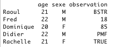

Ce tutoriel a pour ambition de vous apprendre les bases du langage R qui est l'un des programmes d'analyse statistique de référence, notamment auprès de la communauté scientifique et universitaire. Ce tutoriel n'est pas à proprement parler un cours de statistiques. Certaines notions seront utilisées et expliquées si nécessaire afin que le contenu reste clair mais ce cours se concentrera surtout sur l'apprentissage de ce langage qu'est R, ses structures de données, les tests statistiques réalisables, la génération de graphiques, son utilisation avancée,... Une fois le tutoriel assimilé, vous serez (normalement) capables de trouver vous même comment effectuer un test précis qui n'aurait pas été abordé.
Au cours des différents chapitres vous apprendrez à maitriser les rudiments de ce langage, organiser des données plus ou moins complexes pour, au final y appliquer différents tests statistiques mais aussi les représenter de manière graphique.
C'est parti! On plonge enfin dans le grand bain et on commence ce cours sur R. Mais avant toute chose, il faut apprendre ce qu'est réellement le langage R et à quoi il peut nous servir. Et, pour commencer à travailler correctement, il nous faudra aussi l'installer. Pas de temps à perdre donc, on y va!
R est un langage de programmation dont le but est de pouvoir traiter et organiser des jeux de données afin de pouvoir y appliquer des tests statistiques plus ou moins complexes et se représenter ces données graphiquement à l'aide d'une grande variétés de graphiques disponibles.
Développé initialement au début des années 1990 par Ross Ihaka et Robert Gentleman, ce langage basé sur un autre langage statistique appelé S (oui, les informaticiens ont beaucoup d'imagination), est désormais maintenu et mis à jour par une équipe de développeurs au sein du R Project. Cette structure garantit des mises à jour fréquentes et une communauté importante d'utilisateurs apporte son aide pour notamment développer de nouvelles fonctionnalités (des librairies, nous en parlerons plus tard) au projet.
Le langage R est en effet très implanté dans la communauté scientifique et universitaire et ses nombreux utilisateurs organisent même des conférences pour discuter des nouveautés disponibles sous R.
Malgré quelques critiques généralement portées, ce langage est très utilisé pour diverses raisons:
il permet d'organiser et traiter des volumes importants de données de manière rapide et flexible. Comme il s'agit d'un langage de programmation, vous pouvez (à peu près) en faire tout ce que vous voulez.
il permet d'assez facilement créer des graphiques paramétrables afin de pouvoir mieux visualiser le résultat de vos analyses.
il est entièrement gratuit et sous licence GPL, ce qui signifie que vous pouvez en télécharger les sources et les modifier. C'est notamment grâce à cela qu'une active communauté peut améliorer le langage en permanence.
il est multi-plateforme. Vous pourrez en effet l'utiliser sous Windows, Mac OS ou Linux.
R est un langage de programmation mais son utilisation est fortement orientée vers les analyses de données et statistiques. Ainsi, si vous souhaitez créer des jeux vidéos, un lecteur vidéo ou MP3 ou tout autre style d'application utilitaire vous faites certainement fausse route.
Afin d'illustrer un peu mes précédents propos je vous propose de rapidement voir quelques exemples des capacités de R.
Voici un aperçu de graphiques que vous serez capables de faire après avoir lu quelques chapitres:
Des jolis graphiques pleins de couleurs et assez faciles à réaliser
Avec les données adéquates, vous pourrez même faire des graphes aussi poussés que celui ci:
Un graphe de topographie
Mais, évidemment, pour y arriver, il faudra taper quelques lignes de code. Voici un exemple de ce qui vous attend:
Un exemple de code en R
Ca peut paraitre assez complexe ainsi, surtout si vous êtes novices en programmation mais, rassurez vous, dans quelques chapitres vous serez capables de comprendre et reproduire ces extraits de code ou ces graphiques. Pas de temps à perdre donc, installons R!
R est disponible sous différente plateformes: Windows, Mac OS et Linux. Il faudra donc adapter l'installation au type de machine que vous avez.
Rendez vous sur cette page (page en anglais) pour sélectionner un des miroirs de téléchargement.
Installation sous Windows
Une fois votre miroir choisi, cliquez sur le lien Windows puis sur le lien base. En haut de page apparait alors un lien "Download R for Windows", cliquez dessus pour le télécharger. Une fois le téléchargement fini, lancer le programme d'installation et suivez les instructions données par les différentes boites de dialogue vous permettant, par exemple, de choisir la langue du protocole d'installation ou le dossier dans lequel sera installé R. Il vous est alors demandé de choisir le type d'installation. L'installation complète ne demande qu'une soixantaine de Mo d'espace, il est donc conseillé de la séelectionner comme illustré ci dessous.
Choix du type d'installation de R.
Si vous disposez de très peu d'espace sur votre machine, vous pouvez vous contenter de l'option par défaut. L'installation minimale est quant à elle peu recommandée dans la mesure où elle n'installe pas certains fichiers d'aide. Enfin, si vous pensez comprendre tous les éléments indiqués dans la liste, vous pouvez essayer d'effectuer une installation personnalisée mais cette fonctionnalité est plutôt réservée aux utilisateurs avancés.
Une fois cette étape réalisée, continuer à suivre les indications des boites de dialogue en gardant les options par défaut. Après quelques clics vous aurez installé R, félicitations. :)
Installation sous Ubuntu
Sous Ubuntu ou autre distribution dérivée de Debian vous pouvez trouver R via apt-get ou synaptic. Le paquet s'appelle r-base et vous pouvez donc l'installer en lançant la ligne de commande suivante.
sudo apt-get install r-base
Si vous disposez d'un autre type de distribution ou que vous souhaitez compiler directement les sources, choisissez le lien Linux sur la page de téléchargement du miroir que vous aurez choisi et sélectionnez le dossier correspondant à votre distribution pour télécharger les sources. Les instuctions d'installation se trouvent alors dans un fichier d'aide présent dans le dossier téléchargé.
Installation sous Mac OS X
Sur la page de téléchargement, choisissez le lien Mac OS X et dans la section Files cliquez sur le premier lien proposé (du type R-x.xx.x.pkg où x.xx.x représente le numéro de version). Lancez alors le fichier téléchargé en prenant soin de vérifier que votre compte dispose des droits nécessaires. Suivez les instructions données par les boites de dialogue. Vous n'aurez normalement pas à changer d'options et pouvez donc valider chaque étape. Votre mot de passe vous sera demandé lors de l'installation, rassurez vous c'est normal, cela sert seulement à vérifier que vous avez les droits d'installer des logiciels sur la machine. Après quelques secondes ou minutes d'attente, R sera installé.
Voilà, vous en savez maintenant plus sur le langage R et l'avez même installé sur votre machine. On va donc pouvoir commencer à s'amuser et prendre le programme en main.
C'est l'heure du grand saut, on va enfin démarrer R et commencer à prendre ce langage en main. Ne perdons pas de temps, c'est un chapitre assez conséquent!
Le langage R est un langage interprété. Cela signifie que l'on peut écrire seulement une ligne de code, la valider et en voir le résultat. Il n'y a donc pas besoin d'une étape préalable de compilation du code, celui ci est intreprété à la volée.
Pour écrire du code en R on peut donc simplement lancer ce que l'on appelle la console et taper du code. C'est donc ce que l'on va commencer à faire.
Pour lancer R il vous faut donc:
sous Windows, lancer le programme Rxxx (xxx correspondant à la version) dont un raccourci a été créé sur le bureau après l'installation.
sous Mac OS X, lancer le programme R présent dans le dossier Applications.
sous Linux (et plus généralement tout système Unix), ouvrir un terminal et lancer la commande "R" (sans les guillemets).
Lors de ce tutoriel les captures d'écran proposées sont faites sous Mac OS X, mais comme précisé la différence d'interface ne changera rien au niveau du code. Pour les utilisateurs de Linux, il n'y a pas d'interface graphique installée par défaut avec R mais plusieurs sont disponibles au téléchargement si travailler dans un terminal vous rebute (une petite liste ici).
Vous devriez alors vous trouver devant une fenêtre de la sorte:
Console R sous Mac OS X
Comme vous le voyez, un curseur clignote au niveau du chevron (le signe ">"), c'est là que sera rentré le code. Commençons donc avec des choses faciles et tapons le chiffre 42 et voyons ce que cela donne:
> 42
[1] 42
Cela nous retourne le même nombre, ce qui est plutôt rassurant. ^^ Le chiffre [1] devant signifie que c'est le premier élément de réponse renvoyé. Par la suite, lorsque nous manipulerons des données plus complexes, plusieurs résultats seront parfois retournés, dans ce cas leur numérotation sera utile.
Je vous rassure, R ne sert pas seulement à répéter les nombres qu'on lui donne. Une des fonctions de base est de pouvoir effectuer des opérations élémentaires comme nous pouvons le voir dans cet exemple.
>
> # Tout d'abord on peut rentrer des valeurs négatives
> -42
[1] -42
>
> # Mais aussi des valeurs décimales à l'aide du point (et non de la virgule)
> 42.1
[1] 42.1
>
> # On additionne
> 39 + 3
[1] 42
>
> # On soustrait
> 58 - 16
[1] 42
>
> # On multiplie
> 6 * 7
[1] 42
>
> # Et on peut même diviser =)
> 8 / 3
[1] 2.666667
>
> # Reste de la division (modulo: 10 = (3x3) + 1)
> 10 %% 3
[1] 1
>
> # Partie entière de la division
> 10 %/% 3
[1] 3
>
> # Et on peut même utiliser des puissances. Ici 5 à la puissance 3.
> 5^3
[1] 125
>
> # Et enfin, on peut combiner plusieurs opérateurs
> ((10 + 15) / 5) - 3*2
[1] -1
>
Vous savez maintenant utiliser les différents opérateurs arithmétiques de base afin d'effectuer des calculs plus ou moins complexes. On va maintenant voir comment on peut stocker les valeurs ou les résultats dans ce que l'on appelle des variables afin de pouvoir plus facilement réutiliser certaines parties de votre code par la suite.
R ne vous servira au final que rarement à effectuer des opérations aussi simples que celles précédemment décrites. La plupart du temps vous l'utiliserez pour effectuer des calculs statistiques complexes et, dans ce cas, vous aurez souvent besoin de stocker vos résultats quelque part pour les réutiliser par la suite. C'est là qu'interviennent les variables.
Les variables sont des cases mémoire qui permettent de stocker des valeurs. Les variables les plus simples permettent de stocker des valeurs numériques (c'est à dire un nombre) ou du texte par exemple. Dans les chapitres suivants, nous verrons que l'on peut aussi y stocker des structures plus complexes comme des tableaux. Mais commençons par des exemples plus faciles et voyons comment on créé une variable.
> # On créé la variable appelée a et contenant la valeur 42
> a <- 42
>
> # On affiche le contenu de la variable
> a
[1] 42
>
> # On change le contenu de la variable
> a <- 8
>
> # On affiche son contenu
> a
[1] 8
> # La précédente valeur a été écrasée, la variable a contient maintenant la nouvelle valeur assignée
>
> # L'assignation marche aussi dans l'autre sens
> 5 -> a
> a
[1] 5
>
Comme vous le voyez, créer une variable est assez simple. Il y a cependant des règles à respecter:
le nom des variables doivent impérativement commencer par une lettre.
la casse (le fait qu'un caractère soit en majuscule ou minuscule) est importante. Par exemple la variable a sera différente de la variable A.
le nom des variables peuvent contenir des caractère spéciaux et des nombres (mais pas comme premier caractère).
les variables ne peuvent pas être appelées avec des noms déjà utilisées par le langage R.
Je vous l'ai dit, on peut stocker plusieurs types d'objet ou de structures de données dans une variable. Nous verrons plus tard les structures complexes telles que les tableaux, matrices, vecteurs ou listes. C'est ce que l'on appelle le type d'une variable. C'est une notion assez importante en programmation et ça l'est d'autant plus en R car le langage est parfois assez capricieux avec le typage des variables. Dans l'exemple précédent nous avons créé des variables de type numérique, car nous y avons assigné des nombres. Comme démontré ci dessous, on peut aussi y assigner une chaîne de caractères.
> # On assigne une chaîne caractère à la variable a
> a <- 'Hello World'
> # On affiche son contenu
> a
[1] "Hello World"
Il est aussi à savoir que le fait d'insérer des guillemets dans une chaîne de caractères peut poser problème comme illustré ci dessous:
Dans un tel cas, R interprète que la chaîne de caractères rentrée commence après le premier guillemet et s'arrète après le guillemet suivant. Du coup, il ne comprend pas pourquoi on écrit encore après la fin de la chaîne et renvoie une erreur. La solution est d'échapper le guillement. Concrètement, cela signifie que l'on va mettre un signe devant le second guillemet (un backslash: \) afin que R comprenne qu'il s'agit en fait d'une élément du texte et non d'un guillement pour terminer la chaîne de caractères.
> # On échappe le guillemet afin que R comprenne qu'il ne doit pas finir la chaine de caractère après le m
> a <- 'Je m\'appelle Philippe.'
> a
[1] "Je m'appelle Philippe."
Vous savez maintenant manipuler les variables en R, comme vous le voyez il n'y a rien de bien compliqué. Mais vous vous rendez certainement compte qu'en manipulant simplement des variables et des opérateurs tels que des additions ou des multiplication il n'y a pas réellement de différence avec une bête calculatrice. C'est pourquoi on va passer à l'étape supérieure et utiliser des fonctions.
Lorsque l'on effectue des analyses statistiques ou simplement de la programmation on est souvent amené à utiliser les mêmes outils. Ces outils peuvent être mathématiques (faire la moyenne d'une série de nombres, la somme d'une colonne d'un tableau,...), pratiques (sauvegarder un tableau) ou encore propres au fontionnement du programme (appeler l'aide). Plutôt que de devoir à chaque fois écrire beaucoup de lignes de code pour des choses assez simples et répétitives on fait appel à ce que l'on appelle des fonctions.
Définition et appel de fonctions
Une fonction est donc caractérisée par deux composantes:
son nom: c'est ce nom qui nous permettra de nous y réferer, en programmation on dit appeler la fonction.
une liste d'arguments: ce sont les informations dont la fonction a besoin pour travailler et renvoyer son résultat.
La syntaxe pour appeler une fonction est la suivante: il faut écrire son nom suivi de parenthèses. Entre ces parenthèses, nous indiquerons les arguments dont la fonction a besoin: nom_de_la_fonction(arguments). Le plus simple pour bien comprendre comment cela marche est de prendre quelques exemples. Imaginons que vous vouliez calculer la racine carrée d'un nombre, vous pourrez alors faire appel à la fonction sqrt() (sqrt est l'abbréviation courante pour square root qui signifie racine carrée en anglais). Cette fonction n'a besoin que d'un seul argument pour travailler: un nombre (ou une liste de nombres mais ça on ne sait pas encore faire). On prend alors pour habitude de décrire une fonction de la manière suivante:
sqrt(x)
Cela permet de savoir combien d'arguments sont nécessaires et l'on peut aussi détailler le type de l'argument (un nombre, une chaîne de caractères,...). Dans ce cas ci il n'y a qu'un seul argument que l'on appelle x est qui doit être une ou plusieurs valeurs numériques. Mais nous verrons par la suite que certaines fonctions en disposent de bien plus. Pour voir comment on pourra alors appeler une fonction telle que la fonction sqrt() voyons ces quelques exemples ci dessous.
> # On appelle la fonction sqrt en lui passant l'argument 42. Le résultat renvoyé est affiché dans la console.
> sqrt(42)
[1] 6.480741
>
> # On peut transmettre cet argument sous la forme d'une variable
> a <- 9
> sqrt(a)
[1] 3
>
> # Et enfin on peut stocker le résultat renvoyé dans une variable pour réutiliser le résultat plus tard
> resultat <- sqrt(a)
> resultat
[1] 3
>
> # Comme précisé, cette fonction prend un ou plusieurs nombres comme argument. Si on lui donne une chaîne de caractères, cela génère (logiquement) une erreur.
> sqrt('Hello World')
Erreur dans sqrt("Hello World") :
Argument non numérique pour une fonction mathématique
>
Arguments facultatifs
Certaines fonctions nécessitent plusieurs arguments et certains de ces arguments sont optionnels et possèdent une valeur par défaut. Si on ne leur spécifie pas de valeur, ces arguments prendront la valeur définie par défaut, sinon ils prendront la valeur qu'on leur aura spécifié. Prenons l'exemple de la fonction logarithme. Si on veut calculer le logarithme il faut connaitre deux éléments: le nombre que l'on veut transformer et la base du logarithme. Généralement on calcule des logarithmes népériens (aussi appelés naturels) qui ont pour base le nombre e (qui équivaut à l'exponentiel de 1). Sous R la fonction logarithme s'appelle log() et se décrit de la manière suivante:
log(x, base = exp(1))
Le premier argument, x, est obligatoire et recevra le nombre que l'on veut transformer. Le second argument est désigné par son nom, base et dispose d'une valeur par défaut indiquée après le signe =, ce qui désigne qu'il est facultatif. Il est destiné à définir la base du logarithme. La valeur par défaut pour la base est donc le nombre e (plus précisément exp(1), exp() étant la fonction R pour exponentiel). Si l'on veut calculer un logarithme de base e on n'aura donc pas besoin de le spécifier car il s'agit de la valeur par défaut. Si on veut utiliser un autre base, il faudra alors le spécifier et passer l'argument à la fonction log(). Voici quelques exemples illustrant les différentes manières d'appeler une fonction contenant des arguments facultatifs.
> # Si l'on ne précise pas de valeur pour le second argument (facultatif), la fonction log() retourne le logarithme de base e
> log(2)
[1] 0.6931472
>
> # On peut spécifier le second argument en l'appelant par son nom. On lui donne ici la même valeur que celle par défaut ce qui ne change pas le résultat
> log(2, base=exp(1))
[1] 0.6931472
>
> # Comme il n'y a que deux arguments il n'est pas obligé de préciser le nom du second argument étant donné que c'est le seul que l'on peut préciser.
> log(2, exp(1))
[1] 0.6931472
>
> # Si on change la base du logarithme on voit qu'alors le résultat change par rapport à celui utilisant la valeur par défaut pour la base
> log(2, base=2)
[1] 1
>
> # Autre exemple de changement de la valeur pour la base, entrainant un résultat encore différent
> log(2, 10)
[1] 0.30103
>
Les alias de fonctions
Si certaines personnes utilisent souvent des logarithmes népériens (base e), certains utilisent quant à eux plus fréquemment des logarithmes de base 2 ou 10. Dans de tels cas il faut alors spécifier la base à chaque fois ce qui peut être ennuyeux, surtout si l'on est fénéant. :) Afin de faciliter la vie de ces personnes ci, R dispose de ce que l'on appelle des alias (aussi appelés wrappers en anglais). Ces alias s'utilisent comme des fonctions normales, la seule différence est que lorsqu'on les appelle elles se contentent d'appeler une fonction déjà existante en lui spécifiant d'autres paramètres que ceux par défaut. Dans notre exemple on pourra alors se simplifier la tache en appelant les fonctions log2() et log10() pour calculer respectivement des logarithmes de base 2 ou 10.
>
> # Voici donc deux manières de calculer un logarithme de base 10
> log(2, 10)
[1] 0.30103
>
> # La seconde étant plus simple à écrire grace aux alias
> log10(2)
[1] 0.30103
>
>
> # De même pour un logarithme de base 2
> log(2, 2)
[1] 1
>
> log2(2)
>
[1] 1
Dans cet exemple l'économie d'écriture est faible mais dans certains cas que nous verrons par la suite, les alias de fonctions pourraient vous simplifier la vie de manière bien plus criante.
Au début de ce chapitre vous avez appris à créer des variables mais aussi qu'il en existait différentes sortes. Pour l'instant vous savez créer et manipuler deux types de variables: les variables numériques et les chaînes de caractères. Nous allons maintenant découvrir un troisième type de variable mais aussi apprendre comment tester leur type ou créer des variables d'un type déterminé.
Un nouveau type: les booléens
Nous allons maintenant découvrir un nouveau type de données: les booléens aussi appelés éléments logiques sous R.
Un booléen est une expression ou un élément qui ne peut prendre que deux valeurs: vrai ou faux. Sous R les mots clefs correspondant sont TRUE (pouvant s'écrire T - voulant dire vrai) et FALSE (pouvant s'écrire F - voulant dire faux). A noter que les majuscules sont importantes. Le fait de comparer différents nombres est par exemple un booléen car le résultat ne pourra prendre que deux valeurs: vrai ou faux; selon que la comparaison soit correcte ou non. Les lignes de codes ci dessous permettent de découvrir les différents opérateurs de comparaison disponibles dans R.
> # Le signe == permet de tester l'égalité
> 5 == 5
[1] TRUE
> # Et le signe != la différence (l'expression signifie "5 est il différent de 5?")
> 5 != 5
[1] FALSE
>
> # 5 est il inférieur à 5
> 5 < 5
[1] FALSE
>
> # 5 est il inférieur ou égal à 5?
> 5 <= 5
[1] TRUE
>
> # Même syntaxe pour le signe supérieur
> 5 > 4
[1] TRUE
> 5 >= 4
[1] TRUE
Cette syntaxe vous sera utile lors de prochains chapitres lorsque l'on souhaitera par exemple trier une liste d'éléments ou la colonne d'une matrice en fonction de la valeur qu'ils contiennent. Dans l'immédiat les booléens peuvent cependant nous être utiles, en effet, certaines fonctions renvoient des booléens, c'est à dire qu'elles ne vous retourneront que deux valeurs possibles: TRUE ou FALSE.
Tester le type d'une variable
Parmi ces fonctions, certaines servent à tester le type d'une variable. Imaginons que vous souhaitez effectuer un traitement sur un nombre. Il serait utile de d'abord vérifier si la variable que vous allez analyser est oui ou non un nombre, sans quoi votre code risquerait de générer des erreurs. Cette fonctionnalité est assurée par les fonctions présentées ci dessous.
>
> # Créons une variable dont on veut tester le type
> variable <- "A"
>
> # Fonctions permettant de vérifier si cette variable est:
> # Une chaîne de caractères
> is.character(variable)
[1] TRUE
>
> # Une variable numérique
> is.numeric(variable)
[1] FALSE
>
> # Un élément logique (booléen)
> is.logical(variable)
[1] FALSE
>
Ce genre de fonctions existe pour tous les types de variable dont nous apprendrons à nous servir par la suite, leur syntaxe est identique et le leur nom sera spécifié dans le chapitre adéquat.
Créer des variables typées
Vous aurez peut être remarqué, en R, il n'y a pas besoin de spécifier quel type de variable nous créons. R est assez intelligent pour savoir reconnaître s'il s'agit d'un nombre ou bien d'une chaine de caractères se situant entre guillemets. On dit alors que le langage utilise un typage implicite.
Cependant, vous devrez parfois spécifier à R le type de variable que vous souhaitez créer. Ou bien modifier le type d'une série de variables (plus tard cela pourra s'appliquer à des structures plus complexes comme des séries de valeurs, des tableaux,...). Pour pouvoir effectuer ce type d'opérations, il suffit de connaître et d'appeler les bonnes fonctions: il s'agit principalement des fonctions as.numeric(), as.logical() et as.character().
Vous vous en doutez certainement, la fonction as.numeric() permet de déclarer ou retyper son argument en tant que nombre tandis que as.logical() génèrera des éléments logiques (booléens) et as.character() des chaînes de caractères. Voyons en quelques exemples.
> # Utilisons la fonction as.numeric()
> # Evidemment elle peut convertir un nombre... en nombre. Jusque là tout va bien.
> as.numeric(42)
[1] 42
>
> # Elle peut aussi convertir une chaîne de caractère contenant un nombre en nombre. Utile =)
> as.numeric("42")
[1] 42
>
> # Par contre si la chaine de caractère contient autre chose que des nombres ça bloque et R affiche un message d'erreur.
> as.numeric("4A")
[1] NA
Warning message:
NAs introduits lors de la conversion automatique
>
>
> # Regardons maintenant la fonction as.character()
>
> # Elle peut transformer une chaîne de caractères en chaîne de caractères. Rassurant.
> as.character("Hello")
[1] "Hello"
>
> # Mais aussi un nombre en chaine de caractères.
> as.character(42)
[1] "42"
>
Il existe une autre fonction permettant de typer votre variable en nombre qui est la fonction as.integer(). Le mot integer voulant dire entier en anglais vous comprendrez alors que cette fonction permet de convertir ou déclarer une variable qui contiendra une nombre entier (sans décimales).
> # as.integer type un nombre décimal en nombre entier
> as.integer(3.14)
[1] 3
>
> # De même pour une chaine de caractères contenant seulement un nombre décimal
> as.integer("3.14")
[1] 3
>
Je n'ai volontairement pas encore parlé de la fonction as.logical() car les booléens possèdent quelques particularités. L'une d'entre elle est qu'un nombre, une chaîne de caractère ou tout autre type de variable peut être transformé en booléen, il s'agit seulement d'en connaitre les règles détaillées ci dessous et qui vous indiquent ce que renverra la fonction as.logical() selon ce que vous lui transmettez comme argument.
Pour les éléments numériques
Valeur
Equivalent logique
0
FALSE
Tout autre nombre
TRUE
Pour les chaines de caractères:
Chaine de caractères
Equivalent logique
"F" ou "FALSE"
FALSE
"T" ou "TRUE"
TRUE
Autre chaine de caractères
NA
Vous avez sans doute remarqué que le dernier tableau contient un type de variable que vous n'avez encore jamais rencontré: NA. Il existe en fait deux autres types de variables, des types que l'on utilise lorsque nous n'avons pas de données ou alors qu'elles n'ont aucune valeur. Il s'agit des types NA et NULL. La différence entre les deux est assez étroite.
NA est utilisé lorsque la valeur n'existe pas ou n'est pas définie. Par exemple, si vous avez une expérience avec plusieurs mesures mais qu'une est manquante vous utiliserez alors le type NA. Dans l'exemple précédent, si l'on essaie de convertir une chaîne de caractère en nombre, cela renvoie la valeur NA car le résultat renvoyé par cette fonction est quelque chose qui n'existe pas.
NULL désigne une valeur nulle. Contrairement à NA, celle valeur a un sens, elle indique que le résultat n'a pas de valeur. On pourrait généraliser en disant qu'il s'agit de l'équivalent du 0 mais appliqué à tout type de données.
Vous pourrez donc créer une variable NULL mais pas NA car cela signifie que vous voulez créer quelque chose qui n'existe en fait pas.
> # Exemples d'utilisation de la fonction as.null() qui renvoie toujours... NULL
> as.null(5)
NULL
>
> as.null("Bonjour")
NULL
>
Vous connaissez maintenant les rudiments du langage R. Vous savez éxécuter du code, effectuer des calculs élémentaires, stocker leur résultat dans des variables et utiliser des fonctions basiques. Vous commencez aussi à être familiers avec le typage des variables. Ce chapitre est assez conséquent mais il contient beaucoup de notions qui vous seront très utiles par la suite.
Alors si vous avez réussi le questionnaire ci dessus vous pouvez attaquer le chapitre suivant qui sera un peu plus léger!
Le chapitre précédent vous a introduit ce qu'étaient les fonctions et comment on pouvait les utiliser en R. Elles vous seront très utiles tout au long de votre apprentissage et de l'utilisation de ce langage et, avec le temps, vous serez même capable de créer vos propres fonctions. Mais en attendant de pouvoir faire cela, ce chapitre va vous apprendre à utiliser bon nombre de fonctions utiles qui vous permettront d'effectuer des calculs arithmétiques, vous faciliter la vie sous R ou encore d'obtenir la description détaillée d'une fonction précise.
Lors du chapitre précédent, vous avez pu vous familiariser avec les descriptions de fonctions, c'est à dire la façon dont l'on représente une fonction et qui vous indique comment l'utiliser en détaillant son nom et les arguments qu'elle peut prendre (arguments obligatoires et optionnels).
Toutes ces descriptions détaillées sont accessibles dans le fichier d'aide de R qui vous sera d'une grande utilité. Pour chaque fonction vous aurez accès à sa description, le détail des arguments, leur type, le type d'objet retourné et aussi quelques exemples.
Pour ouvrir l'aide il suffit d'appeler la fonction help().
help()
Une nouvelle fenêtre s'ouvre alors et vous indique comment utiliser la fonction... help().
Aperçu de la fenêtre d'aide R
Les pages d'aide sont composées de plusieurs sections dont les plus importantes sont:
Description: cette partie indique à quoi sert la fonction et détaille quelques éléments importants ou intéressants à connaitre.
Usage: c'est la définition de la fonction. On peut y voir la liste d'arguments possibles. Dans le cas de la fonction help() il n'y en a qu'un seul obligatoire qui est topic. C'est cet argument qui définira le sujet (fonction ou autre) pour lequel vous désirez afficher l'aide.
Arguments: cette section détaille la nature des différents arguments obligatoires ou optionnels. On apprend à quoi ils servent, quel est leur type et comment les utiliser.
Details et Note: ici on pourra retrouver des informations complémentaires sur le sujet. Ces descriptions sont en général assez techniques ou permettent de connaitre l'existence de fonctions similaires à celle actuellement consultée.
References: donne les références d'une publication scientifique détaillant l'élément consulté. Là ça devient très technique. ^^
See Also: renvoie vers d'autres pages d'aide concernant des fonctions similaires de R.
Examples: une partie qui peut s'avérer très utile par moments car elle recense quelques exemples d'utilisation de la fonction consultée, même si ils ne sont pas toujours accessibles pour des débutants.
Maintenant que vous savez comment décrypter le fichier d'aide, vous êtes capable d'utiliser la fonction help() et par exemple de regarder la page concernant la fonction log().
> # Voici différentes manières d'ouvrir la page d'aide pour la fonction log()
> help("log")
> help(log)
> ?log
Vous pouvez alors retrouver toutes les informations que je vous avais indiquées dans le chapitre précédent: les arguments obligatoires et optionnels, les alias tels que log2() et log10() ou encore des fonctions en relation comme la fonction exp().
Si vous souhaitez plonger plus en détail dans la documentation R vous pouvez alors appeler la fonction help.start(). Après un petit temps de chargement elle vous affichera une documentation très complète (en anglais) dans votre navigateur internet par défaut. Vous pourrez notamment y trouver les sections suivantes:
An Introduction to R : des principes généraux concernant les variables, objets, fonctions,.. sous R. Un peu comme ce tuto donc. ^^
The R Language Definition: des instructions plus techniques sur le fonctionnement interne de R
R Data Import/Export: cette section indique comment faire communiquer R avec d'autres programmes, lire des fichiers,... On y reviendra en partie dans les chapitres suivants.
R Installation and Administration: Des aides et conseils concernant l'installation et l'administration de R. A consulter si vous rencontrez des problèmes à ce niveau là.
Vous avez donc maintenant les bases suffisantes pour savoir consulter l'aide et y retrouver les informations dont vous avez besoin. Mais parfois, le plus difficile reste de savoir si une fonction particulière existe et, si tel est le cas, quel est son nom. Rendez vous donc avec la suite de ce chapitre pour faire connaissance avec bon nombre de fonctions utiles. Et si vous souhaitez plus de détails les concernant, vous saurez où trouver l'information. ;)
Nous allons maintenant découvrir un certain nombre de fonctions qui vous permettront d'effectuer des opérations mathématiques simples. Cette partie peut paraitre un peu "catalogue" mais elle vous permettra de facilement retrouver le nom d'une fonction si vous la cherchez.
Commençons par exemple par apprendre comment arrondir un nombre. Si vous avez un nombre décimal et que vous désirez travailler sur un nombre entier (sans décimales) ces fonctions vous seront alors utiles.
> # La fonction floor (sol en anglais) renvoie à l'entier inférieur
> floor(2.4)
[1] 2
>
> # La fonction ceiling (plafond en anglais) renvoie l'entier supérieur
> ceiling(2.4)
[1] 3
>
> # la fonction round arrondit à l'entier le plus proche
> round(2.4)
[1] 2
> round(2.6)
[1] 3
Pour une utilisation plus spécifique vous pourrez aussi trouver des fonctions trigonométriques:
> # La fonction cosinus
> cos(90)
[1] -0.4480736
>
> # Sinus
> sin(90)
[1] 0.8939967
>
> # Et tangente
> tan(90)
[1] -1.995200
Vous connaissez maintenant un petit nombre de fonctions et commencez à être habitué à les utiliser. On peut alors avancer en découvrant d'autres fonctions qui vous seront utiles au fur et à mesure de votre progression.
Nous allons maintenant voir comment manipuler de manière plus poussée les chaines de caractères. Une des premières opportunité intéressante est de pouvoir saisir des données depuis le clavier. Cela pourra être d'autant plus utile si vous envisagez par exemple par la suite de créer un script qui sera utilisé par d'autres personnes. Leur proposer d'entrer des valeurs personnelles permettra de disposer d'une version plus personnalisable du programme. Pour ce faire, il suffit d'appeler la fonction scan().
Lorsque vous appelez cette fonction, R vous proposera une ligne commençant par "1:" vous invitant à entrer du texte. Saisissez votre texte et validez. Vous pourrez alors entrer un second élément et ainsi de suite. A partir du moment où vous ne souhaitez plus rien saisir, validez seulement sans entrer de texte au préalable. La fonction renverra donc son résultat qui contient ce que vous avez tapé.
> # On appelle la fonction scan
> scan()
1: 5
2: 8
3: 7
4:
Read 3 items
[1] 5 8 7
> On rentre par exemple ici 3 éléments avant de quitter la saisie en validant avec la seule touche entrée
Comme nous ne savons pour l'instant manipuler que des variables à une seule dimension, nous allons modifier l'appel à cette fonction afin que l'on ne puisse y rentrer qu'un seul élément. Ceci est possible grace à l'argument optionnel nmax qui permet de définir combien d'entrées l'utilisateur pourra saisir. Par défaut il s'agit d'une valeur négative indiquant que seul l'utilisateur peut arrêter la saisie. Voyons donc maintenant comment enregistrer une seule entrée.
> # On appelle la fonction en précisant que l'on ne souhaite saisir qu'un élément
> scan(nmax=1)
1: 42
Read 1 item
[1] 42
>
> # La saisie s'arrête donc après un seul élément et le résultat est renvoyé
> # On peut bien évidemment stocker le tout dans une variable...
> variable <- scan(nmax=1)
1: 24
Read 1 item
>
> # ... et l'afficher
> variable
[1] 24
>
Concaténer du texte
Une autre possibilité est de concaténer du texte. La concaténation est le procédé qui permet de coller bout à bout différents morceaux de texte pour n'en faire plus qu'un seul. Si par exemple vous avez plusieurs variables contenant du texte et des nombres, la concaténation vous permet de mettre ces éléments ensemble selon un ordre défini afin de n'avoir au final qu'une seule et unique chaine de caractères. En R la concaténation se fait grace à la fonction paste(). Son usage est assez simple. Il suffit de lui passer en argument tous les différents éléments que l'on souhaite concaténer et spécifier grace à l'argument sep comment on souhaite les relier (avec un espace, un autre caractère ou rien). Le mieux reste de regarder l'exemple suivant.
> # On créé des variables contenant les informations
> age <- 25
> nom <- 'Philippe'
> # On apelle la fonction paste() en lui donnant les différents éléments de la phrase finale dans l'ordre
> paste('Bonjour je m\'appelle', nom, 'et j\'ai', age, 'ans', sep=' ')
[1] "Bonjour je m'appelle Philippe et j'ai 25 ans"
>
On peut combiner ce code avec la fonction scan() vue précédemment pour quelque chose de plus adaptable.
> paste('Bonjour j\'ai ', scan(nmax=1), ' ans')
Le code ci dessus est volontairement un peu plus complexe mais c'est pour vous faire progresser. :) On peut à tout moment imbriquer des fonctions les unes dans les autres comme ici la fonction scan() imbriquée dans la fonction paste(). Ici R éxécutera donc la fonction paste() en premier et y rencontrera la fonction scan() qu'il exécutera alors en demandant à l'utilisateur de saisir une entrée. Pour finir, l'argument sep n'est ici pas précisé et prend donc sa valeur par défaut, à savoir une chaine de caractère vide. Ceci nous oblige à insérer les espaces nous même.
Autres fonctions
Il existe aussi un bon nombre de fonctions permettant de manipuler une chaîne de caractères, nous allons pour l'instant en voir 4 qui vous pourront vous être utiles: les fonctions nchar(), toupper(), tolower() et substr().
La fonction nchar() permet simplement de compter le nombre de lettres présentes dans une chaîne de caractères comme illustré ci dessous.
> # Cette fonction permet de compter les nombre de caractères, espaces compris.
> nchar("Hello World!")
[1] 12
Les deux fonction suivantes, toupper() et tolower(), sont elle aussi très simples d'utilisation. Leur rôle est de transformer la chaîne de caractères donnée en argument soit tout en majuscule (toupper()), soit tout en minuscule (tolower()).
La fonction substr(x, start, stop) est quant à elle légèrement moins facile mais toujours relativement simple d'emploi. Elle permet d'extraire une sous chaîne allant du caractère numéro start au caractère numéro stop à partir d'une chaîne de caractères x donnée en argument. Le code ci dessous permet par exemple de ne conserver que la partie de la chaine de départ allant du deuxième au quatrième élément.
> substr("Bonjour", 2,4)
[1] "onj"
Pour finir cette section et vous habituer à la manipulation à la fois des chaînes de caractères et des fonctions, vous allez essayer de résoudre le petit exercice ci dessous.
Tout d'abord créer la variable suivante à l'aide du code ci dessous.
variable <- "Bonjour"
Maintenant je veux que vous écriviez le code qui renverra, en majuscules, le contenu de la variable allant du second à l'avant dernier caractère. Vous devez respecter les contraintes suivantes: vous ne devez écrire qu'une ligne de code et faire appel au moins une fois à la fonction nchar().
Si vous rencontrez des problèmes, vous pouvez trouver un peu d'aide ci dessous.
Pour résoudre ce petit problème il faut que vous gardiez en mémoire:
que l'avant dernier caractère est le caractère de numéro égale à la longueur totale de la chaine - 1.
que les fonctions peuvent s'imbriquer. Ainsi si vous devez spécifier un nombre comme argument, vous pouvez très bien spécifier une fonction qui renverra le nombre voulu.
Pour finir ce chapitre, nous allons apprendre à utiliser un certains nombres de fonctions qui vous permettent d'interagir avec votre environnement de travail. En effet, R stocke de manière invisible à l'utilisateur un ensemble de paramètres qui lui permettent de définir des valeurs pour certains paramètres. Cette dernière partie vous apprendra donc à afficher les options que R utilise, les modifier ou encore lister les variables que vous avez créées.
Commençons d'ailleurs par cet exemple. Imaginons que cela fait un moment que vous travaillez dans votre console R et que vous avez créé de nombreuses variables. Le problème est que vous ne vous souvenez plus du nom exact de l'une d'entre elle. Heureusement, il existe une fonction R qui vous permet de les afficher, il s'agit de la fonction ls().
> # Créons quelques variables pour l'exemple
> var1 <- 2; var2 <- 5; var3 <- "Bonjour"; var4 <- 42; var5 <- -2
>
> # Et listons les maintenant
> ls()
[1] "var1" "var2" "var3" "var4" "var5"
>
Les curieux qui ont déjà consulté la page d'aide de la fonction ls() auront remarqué la présence d'autres arguments optionnels tels que pattern qui permet de filtrer les variables dont le nom est composé d'un patron particulier (pattern se traduit par patron en français).
> # Créons d'autres variables pour l'exemple
> var6 <- 8; resultat <- log(1); ma_variable <- "Hello world"
>
> # Maintenant affichons seulement les variables dont le nom contient la succession de lettre "var"
> ls(pattern="var")
[1] "ma_variable" "var1" "var2" "var3" "var4" "var5" "var6"
>
Vous pouvez donc apercevoir que seule la variable resultat n'est pas affichée. Cette option pourra vous être utile lorsque vous aurez un grand nombre de variables créées et que vous voudrez en retrouver une précisément dont vous vous souvenez vaguement du nom.
Si vous pensez que vous avez trop de variables et que certaines ne vous sont plus utiles, vous pouvez en supprimer simplement en utilisant la fonction rm() comme indiqué ci dessous.
> # On efface la variable var6
> rm(var6)
>
> # En utilisant la même commande que précédemment on voit qu'elle a disparu =)
> ls(pattern="var")
[1] "ma_variable" "var1" "var2" "var3" "var4" "var5"
>
Et pour finir ce chapitre, voyons comment... quitter le programme. Si vous utilisez une interface graphique vous aurez certainement remarqué les différents boutons ou menus vous permettant de quitter le programme mais sachez qu'il existe une manière plus rapide de le faire, notamment si vous travaillez en monde console. Il suffit d'appeler la fonction quit() ou son alias raccourci q().
La fonction q() prend plusieurs arguments optionnels dont le premier save qui permet de spécifier si l'on veut oui ou non sauvegarder notre espace de travail. Si vous souhaitez garder toutes les variables que vous avez créées (que vous pouvez voir grace à la fonction ls()), il vous faudra alors sauvegarder votre espace de travail qui les contient toutes. Ainsi, lorsque vous redémarrerez R la prochaine fois, il se souviendra de vos variables et vous pourrez directement les réutiliser. Les différents choix possibles sont alors:
"yes": votre espace de travail sera sauvegardé. R créera un fichier qu'il enregistrera sur votre disque dur et s'en servira au prochain démarrage pour restaurer toutes les variables que vous aviez lors de votre dernière fermeture.
"no": l'espace de travail ne sera ce coup ci pas sauvegardé. Au prochain lancement de R, il ne contiendra aucune variable déjà existante.
"ask": R demandera alors explicitement si vous voulez enregistrer ou pas votre espace de travail. Cette option est rarement utilisée mais peut être utile dans certains cas assez précis.
"default": il s'agit de l'action effectuée par défaut, généralement l'option "ask". Si vous ne spécifier aucun argument à la fonction q() c'est alors cet argument qui sera utilisé.
Voilà, c'en est fini de ce chapitre un peu plus récréatif que le précédent. Vous y avez découvert bon nombre de fonctions qui vous aideront soit dans votre utilisation quotidienne de R, soit dans des cas un peu plus précis et rares.
Dans tous les cas vous êtes désormais habitués à utiliser les fonctions sous R et nous allons donc pouvoir attaquer des parties plus conséquentes mais aussi plus intéressantes. ;)
Depuis le début de ce tutoriel nous n'avons travaillé qu'en mode console, c'est à dire que nous rentrions un bout de code dans le terminal ou l'interface graphique de R et on voyait ce qu'il se passait. Dans la suite de ce tutoriel nous allons apprendre à effectuer des actions plus complexes mais aussi et surtout demandant plus de code. Il nous faudra alors enregistrer ce code quelque part pour pouvoir l'exécuter tout d'un coup ou plusieurs fois sans avoir à le retaper. De même, il pourra être utile de pouvoir enregistrer les résultats (ce qui est affiché sur l'écran) et nos variables (qui seront par la suite bien plus complexes qu'une simple chaine de caractère) afin de pouvoir facilement les réutiliser par la suite. Alors n'attendons pas en apprenons comment faire tout ça :)
Une des premières choses à faire avant d'attaquer l'écriture d'une longue succession de lignes de code est donc de sauvegarder le tout dans un fichier externe. Cela permet à la fois:
de garder une trace du code entier ailleurs que dans le terminal ou la console.
de pouvoir éxécuter l'ensemble du code rapidement sans avoir à copier coller le tout dans le terminal ou la console.
de pouvoir facilement modifier le code et le tester à nouveau.
Pour cela rien de plus simple, il vous suffit simplement d'ouvrir un éditeur de texte, aussi simple soit il et de commencer à y écrire votre code. Tous les systèmes d'exploitation (Windows, Mac, Linux) proposent nativement des éditeurs de texte plus ou moins performants tels que le bloc-notes (Windows), Textedit (Mac OS) ou emacs et vi (Linux). Si vous souhaitez travailler un peu plus confortablement, vous pouvez opter pour un éditeur de texte proposant la coloration syntaxique qui vous écrira les mots clefs de R de couleur différente afin de rendre votre code plus lisible. Selon les plateformes vous pouvez opter pour des éditeurs plus ou moins simples comme Notepad++ (Windows), Smultron (Mac), SciTE (Linux), Eclipse (mulit-plateforme),...
Imaginons maintenant que nous voulons réaliser ce petit script assez simpliste qui permet de donner plusieurs informations sur un nombre donné:
# On saisit un nombre d'intérêt
nombre <- 42
# Et on en tire différentes informations
paste("Etudions le nombre: ",nombre)
paste("Le logarithme népérien de ce nombre est: ", log(nombre))
paste("La racine carrée de ce nombre est: ", sqrt(nombre))
paste("Le cosinus de ce nombre est: ", cos(nombre))
paste("Si on ajoute 3 au nombre ", nombre, " on obtient: ", nombre + 3)
# Et maintenant on quitte R en demandant si on veut sauvegarder notre espace de travail
q("ask")
Une solution pour l'éxécuter est de copier coller le tout dans R. Cela marche mais n'est pas très pratique notammment si on doit souvent le modifier et le relancer. Nous allons donc le sauvegarder dans un fichier externe. Pour cela copier coller ce code dans votre éditeur de texte et sauvegarder le sous le nom de test.R (et souvenez vous de son emplacement).
Pour l'éxécuter il suffit maintenant d'utiliser la fonction source() dont le seul argument obligatoire est le nom du fichier à éxécuter. Si le chemin pour accéder à votre fichier est /Users/votrelogin/test.R vous pourrez alors lancer le script en utilisant le code suivant dans votre console R:
source("/Users/votrelogin/test.R")
Il faut donc spécifier le chemin d'accès de votre fichier en tant que chaîne de caractères (donc entre guillemets). Si vous ne le faites pas, R pensera qu'il s'agit du nom d'une variable et vous renverra donc une erreur car il n'en trouvera pas appelée de la sorte. Votre script s'est donc bien éxécuté et il finit par vous demander si vous voulez enregistrer votre espace de travail comme le spécifie la dernière ligne du script. Par contre vous aurez remarqué une chose étrange: rien ne s'est affiché.
Pour comprendre pourquoi, il faut savoir que lorsque l'on saisit par exemple un nombre, une variable, une opération ou un appel de fonction dans la console de R, celui ci vérifie que l'on n'assigne pas ce résultat à une variable. Si tel est le cas, R déduit alors que l'on souhaite seulement voir le résultat de la commande entrée et l'affiche donc. Ce que l'on ne voit par contre pas c'est qu'il le fait en appelant de manière invisible la fonction print(). Ainsi ces différentes lignes de code ci dessous sont équivalentes, elles sont juste plus ou moins longues à écrire.
> print(42)
[1] 42
> 42
[1] 42
Par contre, dans certains contextes, comme par exemple le fait d'éxécuter un fichier via la fonction source(), l'appel à la fonction print() est indispensable pour pouvoir afficher du texte. En modifiant légèrement notre fichier test.R nous pouvons faire en sorte qu'il affiche les résultats qui nous intéressent, voire même du texte seul pour nous informer de l'avancée du programme. Pour vous en rendre compte, remplacez l'ancien code du fichier test.R par le nouveau code ci dessous, enregistrez le fichier et éxécutez le comme précédemment en appelant la fonction source().
nombre <- 42
print(paste("Etudions le nombre: ",nombre))
print(paste("Le logarithme népérien de ce nombre est: ", log(nombre)))
print(paste("La racine carrée de ce nombre est: ", sqrt(nombre)))
print(paste("Le cosinus de ce nombre est: ", cos(nombre)))
print(paste("Si on ajoute 3 au nombre ", nombre, " on obtient: ", nombre + 3))
print("Au revoir")
q("ask")
Ce coup ci les résultats se sont normalement bien affichés :)
Pour ceux qui préfèrent travailler directement dans un terminal dans un système Unix, il est possible de lancer R en lui spécifiant votre fichier de script comme fichier d'entrée. Il faut seulement savoir que, dans une telle situation, R recquiert qu'on lui spécifie à l'avance si l'on souhaite ou non sauvegarder notre espace de travail. Le travail en terminal permettant dans certains cas de pouvoir lancer plusieurs scripts de manière rapide, le fait de demander à l'utilisateur de rentrer une réponse va à l'encontre de cette démarche. Les commandes demandant une interaction avec l'utilisateur seront ainsi ignorées. Ce sera par exemple le cas de l'appel à la fonction q("ask") dans notre fichier test.R. Si vous souhaitez éxécuter votre fichier en ligne de commandes dans un terminal il vous faudra donc éviter de faire appel à de telles fonctions. Pour éxécuter votre fichier de script, deux solutions s'offrent à vous:
# Si vous souhaitez sauvegarder l'espace de travail
R --save < /Users/votrelogin/test.R
# Si vous ne le souhaitez pas
R --no-save < /Users/votrelogin/test.R
# Pour plus d'informations concernant ces options et celles facultatives mais disponibles
R --help
Pour les utilisateurs plus avancés en programmation et système Unix il est aussi possible de créer des scripts exécutables en ligne de commande comme cela peut généralement être fait dans d'autres langages de programmation. Pour cela, il faut spécifier dans la première ligne du fichier qu'il faudra exécuter le script à l'aide de Rscript, un programme installé en même temps que R. Son emplacement varie selon les installations mais il est généralement situé:
dans /usr/bin/Rscript sur les installations Linux.
dans /Library/Frameworks/R.framework/Versions/2.6/Resources/Rscript pour Mac OS X.
Si il n'est pas installé dans un de ces dossiers sur votre installation Unix vous pouvez essayer de le localiser à l'aide de la commande:
locate Rscript
Pour transformer votre fichier de script en fichier exécutable il vous faudra alors indiquer en première ligne du fichier l'emplacement de Rscript à l'aide de la syntaxe suivante:
#!/usr/bin/Rscript
puis de vous placer dans le dossier contenant le script puis de rendre le fichier exécutable à l'aide de la ligne de commande suivante.
chmod 755 test.R
Dans votre terminal, il vous suffit alors d'appeler votre fichier pour en exécuter le contenu.
Nous venons donc de voir comment créer un fichier de script et comment l'exécuter. Par la suite nous allons créer de plus en plus de fichiers, stocker des résultats, enregistrer des graphiques,... Pour éviter de s'y perdre et de devoir chercher les différents fichiers un peu partout sur notre disque dur il est temps de s'organiser.
Pour ce faire, je vais vous introduire la notion de répertoire de travail. Lorsque l'on démarre R, il définit un répertoire de travail, c'est à dire le répertoire dans lequel il pense que l'on enregistre nos fichiers de script, nos fichiers de sortie,... Pour connaître ce répertoire il suffit d'appeler la fonction getwd() (abbréviation pour get working dir: récupérer le répertoire de travail). Si vous appelez cette fonction (sans arguments) dans votre console, elle vous renverra votre répertoire de travail actuel.
> getwd()
[1] "/Users/votrelogin"
>
Ce dossier changera selon votre installation de R mais surtout selon le système d'exploitation que vous utilisez. Nous allons alors maintenant créer un nouveau répertoire qui contiendra nos différents fichiers, le structurer et indiquer à R que nous allons désormais travailler dans ce dossier. Sur mon ordinateur j'ai donc créé un dossier R accessible à l'adresse "/Users/votrelogin/R/ et qui contient quatre sous dossiers: "scripts", "donnees", "resultats" et "graphiques". Comme vous pouvez vous en douter, chacun de ces dossiers sera amené à accueillir respectivement nos fichiers de scripts, nos fichiers de données à traiter, les résultats que l'on enregistrera et les graphiques que nous produirons.
Maintenant il va falloir spécifier à R que l'on travaillera désormais dans ce dossier. Il faut pour cela donner l'adresse de notre nouveau dossier comme argument à la fonction setwd() (abbréviation pour set working dir: définir le répertoire de travail).
En exécutant le code ci dessous vous pourrez spécifier votre répertoire de travail et vérifier que la modification a bien eu lieu en appelant une nouvelle fois la fonction getwd(). Il est à noter que l'adresse menant vers le dossier R doit être bien évidemment adaptée à votre cas, elle sera normalement différente sur votre machine.
> # On change notre dossier de travail
> setwd("/Users/votrelogin/R")
> # Et on vérifie que la modification a fonctionné
> getwd()
[1] "/Users/votrelogin/R"
Quel est l'intérêt d'une telle manipulation?
Désormais, comme R sait que vous travaillez dans un dossier précis, vous pourrez simplement préciser les adresses de fichier (pour exécuter en script ou sauvegarder des résultats ou variables comme nous le verrons juste après) à partir de ce dossier. Vous n'aurez plus besoin de préciser l'adresse absolue de votre fichier (du genre "/Users/votrelogin/R" pour un système Unix ou "C:/Documents/R" pour un système Windows) mais seulement son adresse relative au dossier courant. Par exemple, si vous copiez votre fichier test.R précédemment créé dans votre dossier "R/scripts/" vous pourrez désormais l'exécuter avec cette commande.
source("scripts/test.R")
Hormis le gain de place et de caractères, ceci permet par exemple de facilement transporter son code entre plusieurs machines, voire plusieurs utilisateurs. Si vous copiez votre dossier sur une nouvelle machine ou un nouveau disque dur il vous suffira alors de changer votre dossier de travail grâce à la fonction setwd(). Vous n'aurez alors aucune autre modification à effectuer dans tout votre code dans la mesure où vous pourrez désormais indiquer le nom de vos fichiers seulement à partir de ce répertoire ci.
Pour l'instant nous ne savons générer des résultats que via des opérations simples, l'appel à certaines fonctions ou encore la concaténation de plusieurs de ces éléments. Ces résultats ne se retrouvent donc que sous forme de texte affichés dans notre console ou notre terminal. Il vous sera parfois utile de sauvegarder cet affichage, cela vous évitera de relancer votre script ce qui sera d'autant plus appréciable si il a besoin de beaucoup de temps pour s'éxécuter.
Pour comprendre comment faire ceci, il me faut d'abord vous introduire la notion de sortie. La sortie en programmation indique l'endroit (un périphérique de l'ordinateur, un fichier,...) où sera écrit le résultat que nous venons de générer. Nous avons vu précédemment que, par défaut, ces résultats sont affichés sur l'écran, dans la console ou le terminal R. Nous avons aussi vu que nous pouvons rediriger ce résultat, cette sortie, vers une variable. Dans ce cas, rien n'est affiché à l'écran car le résultat est enregistré dans une variable, c'est à dire une case mémoire.
Dans notre cas, nous voulons maintenant enregistrer ce qui est écrit à l'écran dans un fichier texte. Pour cela il va nous falloir rediriger la sortie vers le dit fichier. Ainsi, les résultats qui sont normalement affichés à l'écran seront directement écrits dans ce fichier. Ceci nous est possible grace à la fonction sink().
Son utilisation est assez simple. La première étape consiste à indiquer à R vers quel fichier on souhaite rediriger la sortie. Il suffit donc d'utiliser la fonction sink() en lui indiquant en argument le nom du fichier vers lequel la sortie sera redirigée. Une fois que l'on ne souhaite plus enregistrer quoi que ce soit dans ce fichier on rappelle la fonction sink() sans argument ce qui indique qu'il faut rediriger la sortie vers la solution par défaut, à savoir l'écran.
Testons ça et commençons par enregistrer le petit script suivant dans le dossier scripts et sous le nom "essai_sink.R".
# Si vous avez quitté R, votre dossier de travail peut avoir été perdu.
# Dans le doute, on le redéfinit. Le nom est évidemment à adapter.
setwd("/Users/votrelogin/R/")
print("Ce résultat apparaitra sur l'écran.")
print(5 * 2)
# On redirige maintenant vers un fichier de sortie. Si il n'existe pas il sera créé par R
sink("resultats/sortie_essai_sink.txt")
print("Les résultats sont maintenant enregistrés dans notre fichier de sortie.")
print(8 * 2)
# On redirige à nouveau la sortie vers la solution par défaut: l'écran
sink()
print("On affiche de nouveau la sortie sur l'écran")
Et maintenant, exécutons ce fichier via la fonction source().
source("scripts/essai_sink.R")
Vous pouvez alors constater qu'une partie des résultats s'est affichée sur l'écran. Si vous ouvrez le fichier "resultats/sortie_essai_sink.txt" vous pourrez alors voir qu'il contient les résultats affichés entre les deux appels à la fonction sink().
Une dernière subtilité à connaitre à propos de la fonction sink() est son argument facultatif append. Il dictera à la fonction son comportement si jamais vous souhaitez écrire sur un fichier déjà existant. Si vous indiquez FALSE (sa valeur par défaut), le contenu du fichier existant sera écrasé, c'est à dire que les anciennes données seront effacées et seules les nouvelles y seront écrites. A l'inverse, si vous indiquez TRUE, les données seront ajoutées au fichier, après les données déjà existantes.
Grace à cette fonction vous savez désormais enregistrer des résultats que vous pourrez facilement relire. Mais vous serez parfois amenés à vouloir enregistrer des résultats ou données de manière à ce que R puisse les relire, ce qui n'est pas le cas ici. C'est maintenant ce que nous allons voir.
Imaginons maintenant que vous souhaitez effectuer une série d'analyses qui demanderont un temps de calcul assez conséquent. Vous écrivez votre script et au bout de quelques minutes ou heures il vous renvoie votre résultat. Et imaginons maintenant que vous allez devoir réutiliser ce résultat final dans plusieurs autres scripts par la suite. Il est alors facile de comprendre qu'il serait plus pratique de sauvegarder le résultat de notre premier calcul pour finalement l'importer dans les autres scripts. Ceci nous évite d'avoir à réutiliser le premier programme à chaque fois que l'on veut faire tourner les suivants qui en dépendent.
Dans notre cas nous ne savons pas encore manipuler des données complexes ainsi que des fonctions gourmandes en temps de calcul. Mais on va faire comme si. Nous allons créer une premier script qui effectuera une série d'opérations. Nous allons ensuite exporter le résultat final dans un fichier que R sera capable de décrypter par la suite. A partir de là, nous pourrons importer ce fichier dans d'autres scripts pour pouvoir appliquer de nouvelles opérations au résultat qu'il contient.
Commençons alors par créer un premier script dont le but est de générer un résultat que l'on va sauvegarder. Enregistrons le dans "scripts/generer_resultat.R".
# Vous savez maintenant à quoi sert cette ligne, n'oubliez pas de l'adapter =)
setwd("/Users/votrelogin/R/")
# On définit un nombre de départ
nombre_depart <- 0
# Et on y applique différentes opérations. Vous devez normalement toutes les connaitre
print("Traitement")
resultat <- nombre_depart + 10
resultat <- cos(sin(resultat))
resultat <- resultat ^ resultat
resultat <- log2(resultat)
resultat <- sqrt(((resultat * 10) / (resultat + 5)) * -5)
# On a fini nos différents traitements et on enregistre le résultat dans un fichier externe
print("Sauvegarde")
save(resultat, file="donnees/resultat.RData")
print("Fini =)")
La nouveauté dans ce code est la fonction save(). Elle prend un argument obligatoire qui est le nom de la variable à sauvegarder. Un autre argument doit être spécifié il s'agit de file, il indique l'emplacement où sera enregistré la sauvegarde de la variable. R agit un peu bizarrement avec cette fonction, l'argument file étant facultatif mais sa valeur par défaut entraine l'échec de la fonction. Il ne faut donc pas oublier de le préciser, ni d'indiquer de quel argument il s'agit (en indiquant file=) pour pouvoir le distinguer des autres arguments facultatifs.
Maintenant que notre variable est sauvegardée, nous allons pouvoir l'utiliser dans d'autres scripts. Il va pour cela falloir faire appel à la fonction load() comme vous pouvez le constater dans le code ci dessous que vous pouvez enregistrer sous le mom "scripts/analyser_resultat.R".
# Mise à jour de votre espace de travail comme d'habitude
setwd("/Users/votrelogin/R/")
# On charge la variable que l'on avait précédemment enregistrée
load("donnees/resultat.RData")
# Et on y applique un nouveau traitement
nouveau_resultat <- (resultat + 3)^4
nouveau_resultat <- sqrt(nouveau_resultat)
print(paste("Le nouveau résultat est: ", nouveau_resultat, sep=""))
La fonction load() ne prend qu'un argument: le fichier à importer. Son utilisation est elle aussi particulière car il ne faut pas nécessairement assigner le résultat de la fonction à une variable. La fonction load() restaure le contenu de sa variable ainsi que son nom. Ainsi le fait d'importer le fichier "donnees/resultat.RData" restaurera la variable resultat avec son nom et sa valeur. Si vous assignez le retour de cette fonction à une variable, la variable importée sera restaurée de la même manière et la variable récupérant le retour de la fonction load() contiendra le nom de la variable restaurée. Pour plus de facilité il est conseillé de nommer le fichier de sauvegarde avec le même nom que la variable, cela vous permettra de gagner du temps :)
Il est maintenant l'heure de tester si tout cela marche. On va pour cela appeler le premier script "scripts/generer_resultat.R" qui enregistrera la variable, appeler la fonction rm() vue précédemment pour effacer la variable que l'on vient de sauver pour finalement la réimporter grace au second script "scripts/analyser_resultat.R". C'est exactement ce que fait le code ci dessous.
# On définit notre espace de travail si besoin
setwd("/Users/votrelogin/R/")
# On lance le premier script qui enregistre la variable resultat
source("scripts/generer_resultat.R")
# On efface cette variable
rm(resultat)
# Et on la réimporte dans le second script
source("scripts/analyser_resultat.R")
Dans les exemples précédents nous avons sauvegardé une variable dans un fichier mais il est tout à fait possible de stocker plusieurs variables dans un seul et même fichier. Ainsi, lorsque l'on importera ce fichier il chargera dans notre environnement R toutes les variables qu'il contient. Vous pouvez tester cette fonctionnalité grace au code ci dessous.
# On définit notre espace de travail si besoin
setwd("/Users/votrelogin/R/")
# On créé plusieurs variables
nombre <- 42
nom <- "Paul"
# On sauvegarde ces variables dans un même fichier de sauvegarde
save(nombre, nom, file="donnees/nombre.nom.RData")
# On efface ces variables
rm(nombre, nom)
# Et on les réimporte grace à la fonction load
import <- load("donnees/nombre.nom.RData")
# On affiche le nom des variables importées
print(import)
# Et leur contenu
print(nombre)
print(nom)
Vous avez pu remarquer une nouveauté dans cette portion de code. Tout d'abord la fonction rm() peut prendre plusieurs arguments. En effet, tant qu'on lui donne des variables existantes en entrée, la fonction rm() va les effacer. Ainsi, pour effacer dix variables vous n'aurez pas besoin d'appeler dix fois la fonction rm() mais seulement une seule fois en lui fournissant les 10 variables à effacer en argument. La fonction save() fonctionne de la même manière. Vous pouvez lui spécifier autant de variables que vous le souhaitez comme argument, elles seront alors toutes sauvées dans le même fichier spécifié via l'argument file.
Plusieurs fonctions de R fonctionnent de la même manière. Elles sont repérables dans leur description dans le fichier d'aide par le fait que le premier argument est représenté par trois points (...) comme visible ci dessous.
Page d'aide de la fonction save(). Le premier argument est symbolysé par 3 points qui indiquent que plusieurs variables peuvent être spécifiées et qu'elles seront toutes traitées de la même façon.
Ainsi, lorsque vous croiserez une telle description dans l'aide vous saurez que cette fonction peut travailler sur, non pas une seule variable, mais plusieurs à la fois.
Ce chapitre est désormais fini! Vous y avez appris à organiser votre espace de travail, exécuter facilement votre code mais aussi à sauvegarder vos résultats et vos données. Pour l'instant, cela peut sembler dérisoire étant donné que l'on ne sait pas encore faire de scripts trop compliqués mais avec l'apprentissage dès le chapitre suivant de structures de données plus complexes cela va se révéler très utile. Alors autant avoir les bonnes habitudes et pratiques dès le début!
Vous en avez marre de ne travailler qu'avec des variables aussi simples qu'un nombre ou une suite de lettres? Vous souhaitez pouvoir en créer qui contiendraient toute une série de nombres, de noms, d'identifiants,...? Réjouissez vous, le temps est venu. :)
Nous allons maintenant aborder pendant plusieurs chapitres un des principaux atouts du langage R: la gestion de données complexes. R vous permet effectivement de facilement créer mais surtout manipuler diverses structures de données que vous découvrirez sous le nom de vecteurs, matrices, tableau de données,...
Ce chapitre va présenter la structure la plus basique mais aussi peut être la plus importante sous R: le vecteur.
En R, le vecteur est un des éléments de base du langage. Un vecteur est une liste d'éléments étant tous du même type.
Par exemple, jusqu'à maintenant, vous saviez manipuler des nombres. Un vecteur est une structure qui vous permettra donc de stocker plusieurs nombres dans une même variable. D'ailleurs, pour ces structures complexes, nous ne parlerons plus de variables comme précédemment mais d'objets. En effet, nous avons vu que les variables permettaient de récupérer le contenu d'une case mémoire. Or, pour les objets, l'information à stocker est bien plus importante et hétérogène. Selon le type d'objet on peut, en plus des valeurs, par exemple avoir des noms, des niveaux ou bien d'autres informations annexes à stocker. C'est ce que l'on appelle les attributs de l'objet. Le terme variable ne désignera donc maintenant que le nom donné à l'objet, le nom qu'il nous faudra écrire pour y accéder.
Représentation schématique d'un objet.
La définition d'un vecteur nous indique qu'il peut comporter plusieurs éléments et ceux ci doivent être du même type. Pour pouvoir créer un vecteur il faudra donc lui spécifier deux attributs: le type de ces éléments et la longueur du vecteur (le nombre d'éléments qu'il comportera). Nous verrons même par la suite qu'il existe d'autres attributs qui sont eux optionnels tels qu'un nom pour les différents éléments.
Pour finir cette introduction je vais maintenant vous faire une petite révélation: vous avez déjà manipulé des vecteurs lors des précédents chapitres sans vous en rendre compte. En effet, en R, il n'existe pas d'éléments isolés, ce qui veut par exemple dire, qu'un nombre seul n'est en fait pas une variable de type numérique mais un vecteur de type numérique et de longueur 1. C'est pour cela que l'affichage d'une variable dans la console était toujours précédé du chiffre [1] qui indiquait qu'il s'agissait du premier élément du vecteur. Cela veut surtout dire que toutes les fonctions mathématiques que vous avez précédemment utilisé ont pris des vecteurs comme argument. Vous pourrez donc les utiliser de la même façon avec un vecteur de taille 1 qu'un vecteur de taille 10 ou 1000. La seule différence sera donc que la fonction vous retournera le résultat sous la forme d'un vecteur de longueur (généralement) égale à la longueur du vecteur d'entrée. La bonne nouvelle donc c'est qu'en fait vous savez déjà manipuler et effectuer des opérations sur des vecteurs, le seul détail c'est qu'ils n'avaient qu'un élément ;)
Après cette partie théorique mettons maintenant la main à la pâte et voyons comment créer un vecteur. Il existe en fait beaucoup de manières différentes de le faire. Selon le contexte, votre type de données ou votre taux fainéantise vous serez à amener plus souvent une méthode plutôt qu'une autre mais toutes resteront utiles à connaître.
Utiliser la fonction vector()
La première méthode est la plus didactique car elle demande de spécifier explicitement les différents attributs de l'objet que l'on veut créer, un bon moyen d'appréhender ces objets donc ! Il faut pour cela faire appel à la fonction vector() et lui préciser le type de données que le vecteur va contenir ainsi que le nombre d'éléments (la longueur du vecteur). Souvenez vous que tous les éléments d'un vecteur doivent être du même type. Un vecteur peut se composer d'éléments des types suivants:
des éléments numériques,
des chaînes de caractères,
ou des éléments logiques (booléens)
L'exemple suivant vous permet de créer un vecteur contenant 10 éléments numériques.
> vector("numeric", 10)
[1] 0 0 0 0 0 0 0 0 0 0
Cette ligne de code nous a donc créé un vecteur avec 10 éléments numériques et leur a assigné une valeur par défaut qui est ici le nombre 0. En connaissant cette syntaxe pour la fonction vector() on peut donc créer d'autres vecteurs comme illustré ci dessous.
>
> # On peut par exemple créer un vecteur contenant des chaînes de caractères et de longueur 5
> vector("character", 5)
[1] "" "" "" "" ""
>
> # La valeur par défaut est une chaîne vide ""
>
> # Création d'un vecteur contenant 8 éléments logiques (booléens, valeur par défaut FALSE)
> vector("logical", 8)
[1] FALSE FALSE FALSE FALSE FALSE FALSE FALSE FALSE
>
> # En appellant la fonction vector() seule elle utilise les arguments par défaut et créé donc un vecteur de longueur 0 contenant des éléments booléens
> vector()
logical(0)
>
> # On peut donc alors créer des vecteurs de type logique en précisant seulement sa longueur
> vector(length=10)
[1] FALSE FALSE FALSE FALSE FALSE FALSE FALSE FALSE FALSE FALSE
>
> # Enfin on peut évidemment assigner l'objet créé à une variable et l'afficher par la suite
> vecteur <- vector("numeric", length=30)
> vecteur
[1] 0 0 0 0 0 0 0 0 0 0 0 0 0 0 0 0 0 0 0 0 0 0 0 0 0 0 0 0 0 0
>
Il existe une solution plus rapide que l'appel à la fonction vector(). Les fonctions numeric(), character() et logical() permettent de directement créer un vecteur du type voulu. Il n'y a alors plus qu'un seul argument à préciser pour créer un vecteur: sa longueur. Le tableau ci dessous récapitule les solutions équivalentes pour créer un vecteur de taille 10.
Utilisation de la fonction vector()
Equivalence
vector("numeric", 10)
numeric(10)
vector("character", 10)
character(10)
vector("logical", 10)
logical(10)
Saisir les éléments au clavier
Ceux qui ont bien suivi les précédents chapitres et ont une bonne mémoire se souviendront que l'on a déjà vu une fonction permettant des vecteurs: la fonction scan(). Nous avions effectivement vu que si l'on rentrait plusieurs nombres au clavier ils étaient alors tous stockés dans la même structure qui est en fait un vecteur. Les lignes de code suivantes permettent donc de créer des vecteurs grace à cette fonction.
> # Créer un vecteur de taille 3 grace à la fonction scan()
> scan(nmax=3)
1: 1
2: 2
3: 3
Read 3 items
[1] 1 2 3
>
> # Vous pouvez aussi ne pas spécifier la taille maximum et arrêter la saisie en saisissant une ligne vide
> scan()
1: 5
2: 8
3: 42
4: 45
5: 21
6:
Read 5 items
[1] 5 8 42 45 21
>
Cette méthode a cependant certains inconvénients: la fonction scan() ne permet de rentrer que des nombres et elle est peu adaptée pour rentrer un grand nombre de d'éléments.
Générer des séries de nombres
Si vous souhaitez créer de grands vecteurs avec des valeurs spécifiques il existe alors d'autres méthodes qui vous permettront de générer par exemple des suites ou des répétitions d'éléments. La syntaxe suivante permet de générer une suite allant d'un nombre à un autre.
> # Générer une suite de 1 à 10
> 1:10
[1] 1 2 3 4 5 6 7 8 9 10
>
> # Générer une suite de 8 à 19
> 8:19
[1] 8 9 10 11 12 13 14 15 16 17 18 19
>
> # La suite peut aussi se faire en ordre décroissant
> 20:10
[1] 20 19 18 17 16 15 14 13 12 11 10
>
Notez bien cette syntaxe, elle pourra vous être très utile par la suite. Il est aussi possible d'utiliser des fonctions permettant de générer des suites de la sorte notamment grace aux fonctions rep() et seq().
> # La fonction rep() permet par exemple de répéter 10 fois le nombre 1
> rep(1, 10)
[1] 1 1 1 1 1 1 1 1 1 1
>
> # Cela marche aussi avec d'autre type d'éléments comme les chaînes de caractères
> rep("A",10)
[1] "A" "A" "A" "A" "A" "A" "A" "A" "A" "A"
>
> # ou les booléens
> rep(TRUE,10)
[1] TRUE TRUE TRUE TRUE TRUE TRUE TRUE TRUE TRUE TRUE
>
> # On peut aussi générer des séquences avec la fonction seq()
> seq(1,10)
[1] 1 2 3 4 5 6 7 8 9 10
>
> # Elle nous permet d'indiquer le pas. Par exemple ici on va de 1 à 10 en ne compter qu'un nombre sur deux.
> seq(1,10,2)
[1] 1 3 5 7 9
>
Concaténer plusieurs vecteurs
Une dernière méthode consiste à concaténer plusieurs vecteurs. Nous avons déjà précédemment parlé de concaténation mais avec des chaînes de caractères. Le principe est ici le même sauf qu'au lieu de mettre bout à bout différentes chaines de caractères, on le fera avec des vecteurs. La syntaxe est assez simple mais rappelez vous qu'un vecteur doit toujours contenir des éléments du même type. Il vous sera donc impossible de concaténer deux vecteurs contenant des éléments de types différents (par exemple des éléments numériques avec des éléments logiques). La concaténation de vecteurs se fait à l'aide de la fonction c(). Cette fonction prend autant d'arguments que vous le souhaitez, chacun des arguments donnés étant ajouté au nouveau vecteur dans l'ordre dans lequel il a été ajouté.
> # On créé un vecteur contenant 3 nombres différents (je vous rappelle qu'un nombre est en fait un vecteur de taille 1)
> c(1,2,3)
[1] 1 2 3
>
> # On peut aussi en créer avec d'autres types d'éléments
> c("A","B","C")
[1] "A" "B" "C"
>
> # Ici on va concaténer deux vecteurs préalablement créés dans un troisième
> vecteur1 <- 1:10
> vecteur2 <- rep(2,5)
> vecteur3 <- c(vecteur1, vecteur2)
> vecteur3
[1] 1 2 3 4 5 6 7 8 9 10 2 2 2 2 2
Nommer les éléments
Pour plus de lisibilité, on peut être amené à vouloir donner des noms aux éléments d'un vecteur. Créons par exemple un vecteur appelé poids dans lequel nous noterons le poids de 4 individus: Marc, Julie, Sophie et Blaise. Commençons d'abord par créer le vecteur contenant les valeurs.
Maintenant, pour pouvoir lire plus facilement ce vecteur, on veut associer un nom à chacun de ces éléments. Pour cela, nous allons utliser la fonction names(). Cette fonction renvoie les noms des différents éléments d'un objet tel qu'un vecteur. Si on l'utilise pour connaitre les noms des éléments du vecteur poids il nous retourne NULL, tout simplement car, par défaut, les éléments d'un vecteur n'ont pas de nom.
> names(poids)
NULL
>
Nous allons alors utiliser cette même fonction names() pour assigner des noms aux éléments du vecteur poids.
Le code ci-dessous permet donc de définir des noms pour les différents éléments de notre vecteur poids.
> names(poids) <- c("Marc", "Sophie", "Julie", "Blaise")
> poids
Marc Sophie Julie Blaise
77 58 66 89
Maintenant que vous savez créer des vecteurs, il est fort probable que vous ayez besoin de travailler seulement sur une sous partie de celui ci. Afin de permettre ce type de manipulation, les éléments d'un vecteur sont indexés ce qui signifie que chaque élément est accessible grace à un index numérique ou par un nom qui peut lui être attribué.
Les éléments d'un vecteur sont donc indexés par des nombres allant de 1 à la longueur du vecteur. L'index 1 permettra donc d'accéder au premier élément du vecteur, l'index 2 au second élément et ainsi de suite jusqu'au dernier élément. Pour accéder à un élément d'un vecteur via son index on utilise la syntaxe décrite dans l'exemple suivant.
>
> # Créons un vecteur allant de 11 à 25
> vecteur <- 11:25
> vecteur
[1] 11 12 13 14 15 16 17 18 19 20 21 22 23 24 25
>
> # En indiquant l'index désiré (ici 1) entre crochet après le nom du vecteur on récupère l'élément associé à ce vecteur
> vecteur[1]
[1] 11
> # Le chiffre 11 est effectivement le premier élément de ce vecteur
>
> vecteur[5]
[1] 15
> # Tout comme 15 en est le cinquième
>
Le sytème permet cependant d'être plus puissant que cela car il est possible d'extraire plus d'un élément d'un vecteur à la fois. Il suffit pour cela de spécifier plusieurs index sous la forme... d'un vecteur. Au lieu de spécifier un seul nombre entre les crochets, il suffit alors de spécifier un vecteur contenant les index des éléments que l'on souhaite extraire. Vous pourrez ici vous rendre compte que vous aurez tout loisir d'utiliser les différentes méthodes précédemment décrites pour créer des vecteurs. Les exemples ci dessous illustrent comment extraire différents prénoms d'un vecteur grace à différentes méthodes. Le résultat est renvoyé sous la forme d'un nouveau vecteur.
> # Créons d'abord notre vecteur
> prenoms <- c("Philippe", "Irene", "Pierre", "Paul", "Lucie", "Chloe", "Jacques", "Mathilde")
>
> # On extrait les éléments correspondant aux index allant de 1 à 2
> prenoms[1:2]
[1] "Philippe" "Irene"
>
> # Extraction des 4ème et 6éme éléments du vecteur
> prenoms[c(4,6)]
[1] "Paul" "Chloe"
>
> # On crée un nouveau vecteur contenant 10 fois le huitième élément du vecteur
> prenoms[rep(8,10)]
[1] "Mathilde" "Mathilde" "Mathilde" "Mathilde" "Mathilde" "Mathilde" "Mathilde" "Mathilde" "Mathilde" "Mathilde"
>
> # Création d'un vecteur contenant le 3ème, le 8ème et à nouveau le 3ème élément du vecteur prenoms
> prenoms[c(3,8,3)]
[1] "Pierre" "Mathilde" "Pierre"
>
> # Cette syntaxe nouvelle permet de sélectionner tous les éléments sauf les 3 premiers
> prenoms[-(1:3)]
[1] "Paul" "Lucie" "Chloe" "Jacques" "Mathilde"
>
Les index booléens
Il existe une autre façon de sélectionner les éléments d'un vecteur. Une méthode qui peut paraitre contre intuitive mais qui vous sera pourtant très utile par la suite: l'utilisation de booléens. La petite portion de code ci dessous vous en montre un exemple.
On transmet ici un vecteur contenant 3 fois TRUE, 4 fois FALSE puis 1 fois TRUE comme index pour le vecteur prénoms que nous avons précédemment créé. Le nouveau vecteur résultant de cette opération ne comportera alors que les éléments dont l'index a la valeur TRUE, à savoir les éléments numéro 1,2,3 et 8. Cette approche peut paraître ici surprenante car on ne se contente pas de spécifier les éléments que l'on souhaite sélectionner mais aussi ceux dont on ne veut pas. Indiquer que nous ne souhaitons que les éléments 1, 2, 3 et 8 aurait tout aussi bien fonctionné. Et vous avez entièrement raison. Mais imaginons maintenant un autre cas. Vous souhaitez manipuler un vecteur composé d'éléments numériques non ordonnés tel que celui créé par le code ci dessous.
Supposons alors que vous ne souhaitez en extraire que les éléments supérieurs à 7. Nous avons vu lors des chapitres précédents qu'il existe des éléments de comparaison permettant de tester une affirmation et de retourner un booléen. Comme vous savez maintenant aussi que les variables numériques ou les chaines de caractères isolés ne sont en fait que des vecteurs de longueur 1, vous comprendrez alors que l'on peut appliquer ces éléments de comparaison à un vecteur. Ceci renverra un nouveau vecteur de même longueur que le vecteur testé et dont les éléments seront des booléens: TRUE si la comparaison est vrai, FALSE dans l'autre cas.
> # On teste si les éléments de vecteur2 sont supérieurs à 7
> vecteur2 > 7
[1] FALSE FALSE FALSE FALSE FALSE FALSE FALSE TRUE TRUE TRUE TRUE TRUE TRUE FALSE FALSE FALSE FALSE FALSE FALSE FALSE TRUE TRUE TRUE TRUE TRUE TRUE TRUE TRUE TRUE TRUE TRUE TRUE TRUE
>
La commande vecteur2 > 7 a donc créé un vecteur de même longueur que vecteur2 et dont les éléments indiquent si oui ou non la comparaison est vraie ou non. En donnant ce nouveau vecteur comme élément d'indexation pour le vecteur initial vecteur2 on pourra ainsi en extraire les éléments étant supérieurs à 7.
Pour pouvoir sélectionner des éléments précis d'un vecteur il est possible de se référer aux noms des éléments si ils ont été définis. Dans l'exemple du vecteur poids que nous avons créé précédemment, nous pouvons appeler un élément par le prénom qui lui est associé. Il suffit simplement de spécifier le(s) nom(s) des éléments que nous voulons extraire au lieu de leurs index numériques comme le montre l'exemple ci dessous.
> # On sélectionne seulement la valeur associée au nom Sophie
> poids["Sophie"]
Sophie
58
>
> # On peut aussi sélectionner plusieurs éléments en spécifiant un vecteurs de noms. Ici ceux de Sophie et Julie.
> poids[c("Sophie", "Julie")]
Sophie Julie
58 66
>
Finissons maintenant ce chapitre important en apprenant une nouvelle manipulation de base pouvant être effectuée sur un vecteur: modifier un ou plusieurs de ses éléments.
Si vous avez bien suivi et bien compris la section sur l'indexation il vous sera alors très facile de comprendre cette partie car elle repose entièrement sur les mêmes notions. Il n'y a en effet rien de bien compliqué pour modifier un ou plusieurs éléments d'un vecteur. Il suffit d'indiquer le(s) élément(s) que l'on souhaite modifier en se référant à leur index et de spécifier un nombre égal de valeurs de remplacement. L'exemple ci dessous vous illustre ainsi comment modifier des éléments du vecteur prenoms que nous avons étudié précédemment.
> # On modifie le troisième élément par un nouvel élément
> prenoms[3] <- "Quentin"
> prenoms
[1] "Philippe" "Irene" "Quentin" "Paul" "Lucie" "Chloe" "Jacques" "Mathilde"
>
> # On modifie ensuite les éléments d'index 4 et 7 par deux nouveaux éléments.
> prenoms[c(4,7)] <- c("Jean", "Didier")
> prenoms
[1] "Philippe" "Irene" "Quentin" "Jean" "Lucie" "Chloe" "Didier" "Mathilde"
>
Comme vous le constatez, il n'y a rien de bien compliqué dans la manoeuvre dans la mesure où vous êtes un minimum à l'aise avec l'indexation des vecteurs.
Et voilà un autre chapitre important de clos. N'hésitez pas à le relire si vous pensez ne pas avoir compris certains détails car la manipulation des vecteurs est primordiale en R. D'une part, vous venez de faire votre premier pas avec des objets pluri-dimensionnels. Les vecteurs vous permettent de pouvoir manipuler et étudier des séries de valeurs organisées dans une structure adéquate. Désormais vous serez amenés à n'utiliser quasiment que ce genre d'objets. D'une part, il s'agit d'une structure de base qui est omniprésente en R. Lorsque vous manipulerez des structures plus complexes vous vous rendrez compte que leur manipulation est très similaire. Et pour cause! certaines de ces structures sont en fait composées de vecteurs organisés en objets plus avancés.
Maintenant que vous savez créer et manipuler des vecteurs il est temps de s'amuser un peu avec ses structures de données et de découvrir comment en tirer des informations statistiques ou encore comment pouvoir y appliquer des opérations arithmétiques.
Cette partie permet de se rappeler que R est un langage dédié à des études statistiques. La partie programmation et gestion de données y sera toujours présente mais ce chapitre vous indiquera aussi comment extraire des informations statistiques intéressantes de vos données.
Au début de ce tutoriel vous avez appris à effectuer des opérations élémentaires sur des variables numériques. Vous savez désormais que ce que l'on appelait alors des variables étaient en fait des vecteurs numériques de longueur 1. Vous ne serez donc pas surpris d'apprendre que les opérations arithmétiques que vous connaissez s'appliqueront de manière similaire sur des vecteurs de taille supérieure. Il reste seulement à savoir comment R gère tout ça et c'est le but de cette section.
Tout d'abord, pour l'ensemble de ce chapitre nous allors étudier un même jeu de données. Nous allons voir comment nous pouvons manipuler et extraire des résultats intéressants d'une série de mesures de poids (en kilogrammes) que nous allons générer grace au code ci dessous.
Nous allons maintenant voir comment nous allons pouvoir effectuer des opérations sur cet objet. Imaginons par exemple que vous venez de vous rendre compte que la balance dont vous vous êtes servis pour faire les mesures était mal réglée et qu'il faut rajouter un kilogramme à toutes les mesures. Il faut donc rajouter 1 à tous les éléments de ce vecteur. Pour cela, il faudrait théoriquement créer un vecteur aussi long que le vecteur poids et contenant la valeur 1 et de l'additionner au vecteur poids. Cela marche effectivement mais il y a une solution plus simple qui fait appel à une fonctionnalité de R qui s'appelle le recyclage. Si l'on souhaite faire une opération (une addition dans notre cas) entre deux vecteurs, il est alors possible d'utiliser deux vecteurs de longueur différente. R procèdera alors de la manière suivante: il gardera le vecteur le plus long pour y effectuer l'opération et, à partir du vecteur plus court, il créera un vecteur aussi long que le premier en y répétant (recyclant) les éléments déjà existants autant de fois que nécessaire pour obtenir un vecteur aussi long que le premier. R aura donc deux vecteurs de même longueur à sa disposition pour travailler. L'exemple ci dessous est l'illustration parfaite de ce principe.
> # On rajoute 1 à tous les éléments du vecteur et on met à jour la variable
> poids <- poids + 1
> poids
[1] 86 79 55 99 67 79 78 63 90 93 77 78 56 69 72 73 100 103 55 67 99 76 83 84 76
>
On vient de rajouter le nombre 1 au vecteur poids et tous les éléments du vecteur ont été affectés. R a donc pris le vecteur le plus court (le nombre 1 est le seul élément d'un vecteur de taille 1) et a répété son seul élément jusqu'à atteindre la même taille que le vecteur poids. Il ajoute alors ce nouveau vecteur au vecteur poids.
Imaginons maintenant que vous vous êtes rendu compte que votre balance est très facétieuse et ne se déréglait en fait qu'une mesure sur deux. En d'autres termes, les mesures d'index impair sont correctes et les mesures d'index pair sont faussées d'un kilogramme. Comme nous avons déjà rajouté un kilogramme à toutes les valeurs, il va falloir désormais en enlever un à toutes les mesures d'index impair auxquelles il n'aurait rien fallu rajouter précédemment. En utilisant le recyclage, cette opération peut être faite très simplement de la manière suivante.
> poids <- poids - c(1,0)
Warning message:
In poids - c(1, 0) :
la taille d'un objet plus long n'est pas multiple de la taille d'un objet plus court
> poids
[1] 85 79 54 99 66 79 77 63 89 93 76 78 55 69 71 73 99 103 54 67 98 76 82 84 75
>
Ici, R aura alors pris le vecteur le plus petit et l'aura répété autant de fois que nécessaire pour créer un vecteur aussi long que le vecteur poids. Il aura alors soustrait ce nouveau vecteur au vecteur poids. Les éléments d'index impair se seront vus soustrait le premier élément du vecteur (1) tandis que les éléments d'index pairs se seront vus soustraits la valeur 0.
Le tableau ci dessous illustre le fonctionnement de ce principe de recyclage. Pour des soucis de lisibilité, seuls les cinq premiers éléments sont affichés.
Vecteur poids initial
86
79
55
99
67
Vecteur recyclé créé
1
0
1
0
1
Résultat de la soustraction
85
79
54
99
66
Une fois que vous avez compris ce principe de recyclage vous pouvez alors effectuer sans soucis toutes les opérations élémentaires (division, multiplication,...) que vous aviez découvertes lors des premiers chapitres. Vous savez maintenant le faire sur un plus grand nombre d'éléments à la fois et de manière plus puissante.
En ce qui concerne les fonctions arithmétiques que nous avons découvertes précédemment vous devez maintenant savoir qu'elles s'appliquent aussi bien sur des vecteurs longs que sur des vecteurs de taille 1 comme les nombres isolés que nous manipulions au début. Ainsi, lorsque vous donniez un vecteur de taille 1 en argument à une fonction arithmétique, celle ci vous revoyait 1 résultat. Si vous lui transmettez un vecteur plus long, la fonction vous renverra autant de réponses qu'il y a d'éléments dans le vecteur initial. Le code ci dessous en donne l'exemple en transmettant le vecteur poids à la fonction sqrt() (racine carrée).
La fonction sqrt() aura donc pris en argument un vecteur contenant 25 éléments numériques et aura renvoyé un vecteur de 25 éléments comprenant la racine carrée de chacun des éléments du vecteur poids.
Avant de passer à des opérations ou analyses plus poussées nous allons continuer à découvrir des fonctions qui vous permettront de manipuler avec encore plus de souplesse les vecteurs.
La première de ces fonctions est la fonction length(). Les anglophones auront rapidement compris qu'elle permet de connaitre la longueur d'un objet (length signifie longueur en anglais). Plutôt que de compter ses éléments à la main, la ligne de code suivante nous indiquera que notre vecteur poids comporte 25 éléments.
> length(poids)
[1] 25
Cette fonction peut se réveler bien plus intéressante qu'il n'y parait, notamment pour l'indexation. Continuons avec notre exemple et imaginons que nous souhaitons maintenant retirer la première mesure de notre vecteur car elle semble être fausse. Il nous faut alors sélectionner tous les éléments, du second au dernier. Ce qui peut être réalisé grace à la ligne de code suivante.
> # On met à jour la variable en y assignant un vecteur contenant seulement les éléments allant de 2 à 25
> poids <- poids[2:length(poids)]
> poids
[1] 79 54 99 66 79 77 63 89 93 76 78 55 69 71 73 99 103 54 67 98 76 82 84 75
> length(poids)
[1] 24
>
Nous voilà donc avec un nouveau vecteur de seulement 24 éléments dans lequel la première valeur du précédent vecteur a été retirée.
Il existe aussi des fonctions permettant de sélectionner seulement certains éléments d'un vecteur, comme par exemple les fonctions head() et tail(). En anglais head signifie tête et tail veut dire queue. La fonction head() permet donc de sélectionner les 6 premiers éléments d'un vecteur tandis que la fonction tail() ne sélectionnera que les 6 derniers. Un argument facultatif n permet de préciser combien d'éléments nous souhaitons exactement sélectionner (la valeur par défaut étant donc 6).
Cette fonction est assez souvent utilisée pour avoir une vision rapide sur la structure ou le contenu d'un objet. Lorsque vous serez amenés à manipuler des vecteurs ou autres structures plus complexes de très grande taille, il sera alors utile de faire recours à l'une de ces fonctions pour n'afficher qu'une partie des données et ainsi avoir un aperçu de l'objet qu'il va falloir traiter. Mais ces fonctions peuvent aussi servir à facilement indexer un vecteur. Imaginez par exemple que nous souhaitons maintenant enlever le dernier élément de notre vecteur car nous avons aussi des doutes sur sa précision. Notre vecteur étant maintenant composé de 24 éléments, on peut sélectionner les 23 premiers (longueur totale - 1) afin de ne plus avoir le dernier.
Dans le cadre de vos différentes analyses vous devrez parfois trier vos données. Cette section vous présente trois fonctions qui vous permettent d'effectuer ce type de manipulations.
La fonction sort()
La fonction sort() est la première et certainement la plus simple de toutes. Elle prend un le nom de votre vecteur en argument et renvoie un nouveau vecteur contenant les mêmes éléments mais triés dans l'ordre croissant comme le montre l'exemple qui suit.
Si vous souhaitez trier vos éléments de manière décroissante, il vous faudra alors préciser un valeur pour l'argument optionnel decreasing (décroissant en anglais) qui par défaut est défini à FALSE. En donnant la valeur TRUE à cet argument vous pourrez alors trier votre vecteur de manière décroissante comme illustré ci-dessous.
Il est aussi possible de trier des vecteurs contenant des éléments non numériques à l'image des chaînes de caractères ou des éléments logiques.
> # Trier un vecteur contenant des chaînes de caractères
> sort(c("A","C","b","a","B"))
[1] "A" "B" "C" "a" "b"
>
> # ou des éléments logiques (booléens)
> sort(c(TRUE, FALSE, T, F))
[1] FALSE FALSE TRUE TRUE
>
La fonction order()
La fonction order() fonctionne de manière similaire à la fonction sort(), arguments y compris. La seule différence, c'est qu'au lieu de renvoyer les valeurs du vecteur, elle va en renvoyer les index comme l'illustre l'exemple ci dessous.
Ce résultat indique que l'élément d'index 2 est le plus petit, suivi de l'élément d'index 18,... Enfin, l'élément d'index 17 est le plus grand. En transmettant ce vecteur comme index au vecteur poids on est alors en mesure de trier notre vecteur d'origine.
Lorsque l'on ne travaille que sur un seul vecteur, cette fonction n'est pas la plus pratique car elle oblige à faire en deux étapes ce que la fonction sort() fait en une seule. Mais si vous imaginez que vous travaillez sur plusieurs vecteurs contenant des données correspondantes pour des éléments de même index, cette fonction vous permettra alors de trier tous vos vecteurs à l'aide du vecteur d'index renvoyé par cette fonction order(). Vous aurez d'ailleurs tout loisir de vous entrainer à ce genre de manipulation dans les chapitres suivants. :)
La fonction rank()
La dernière fonction de tri que nous allons maintenant découvrir est la fonction rank(). Elle ne trie pas réellement le vecteur mais renvoie, pour chacun de ses éléments, son rang au sein de la distribution formée par l'ensemble des éléments du vecteur.
Le résultat indique, par exemple, que la quatrième valeur du vecteur, est la cinquième valeur la plus élevée de l'ensemble du vecteur. Vous aurez certainement remarqué que certaines valeurs ne sont pas entières mais décimales. Par défaut, lorsque la fonction rank() rencontre des éléments de même valeur (et donc de même rang), il leur attribue la moyenne de l'ensemble des rangs que prendraient ces éléments. Si par exemple deux éléments ont la plus petite valeur comme c'est ici le cas, ces éléments occupent à la fois le rang 1 et 2 et la fonction leur attribuera ainsi la moyenne de ses deux rangs, à savoir 1.5.
Si cette approche ne vous convient pas, vous pouvez modifier ce comportement par défaut de la fonction en donnant l'une des valeurs suivantes à l'argument ties.method de la fonction rank() pour définir quelle méthode adopter si plusieurs éléments partagent le même rang:
first: l'élément situé en premier dans le vecteur se verra assigné le rang le plus petit, l'élément situé en second recevra le rang le plus petit + 1 et ainsi de suite. Cela implique que tous les rangs seront uniques même en cas d'égalité de certains éléments du vecteur.
random: les différents éléments recevront de manière aléatoire l'un des rangs qu'ils occupent. Si deux éléments partagent le premier rang, l'un se verra aléatoirement assigné le rang 1 tandis que l'autre le rang 2. De par le coté aléatoire du processus, le résultat peut donc varier entre deux appels identiques à la fonction. De même que précédemment, tous les rangs renvoyés seront uniques.
min: en cas de partage d'un rang par plusieurs éléments du vecteur, la valeur minimale des rangs occupés par ses éléments est renvoyée pour tous les éléments concernés. Les éléments de même rang ont alors tous la même valeur.
max: fonctionne de la même manière que min, à l'exception que c'est cette fois ci la valeur maximale des rangs occupés par les éléments considérés qui est renvoyée pour ces éléments.
average: il s'agit de la méthode par défaut décrite précédemment.
Maintenant que vous connaissez les détails de fonctionnement de cette fonction, libre à vous de vous entrainer à l'utiliser avec les différents paramètres possibles. :)
Il est maintenant l'heure de faire enfin des statistiques! Ou plus précisément des mesures statistiques. Nous travaillons depuis le début de ce chapitre sur un vecteur contenant des valeurs numériques correspondant au poids de différents individus. Cette ensemble de valeurs forme ce que l'on appelle une distribution.
Une distribution est définie par différentes mesures comme par exemple la médiane ou la variance. Nous allons maintenant apprendre à définir ces mesures avec R.
Mesurer le centre d'une distribution
Il existe deux méthodes principales pour définir le centre d'une distribution: la moyenne et la médiane.
La moyenne
La moyenne arithmétique d'une distribution équivaut à la somme des éléments d'une distribution divisée par ce même nombre d'éléments. Je suppose que c'est une notion à laquelle vous êtes habitués car vous avez du en calculer bon nombre à l'école. :) Sous R, la moyenne se calcule à l'aide de la fonction mean() (mean voulant dire moyenne en anglais). Cette fonction prend pour argument un vecteur numérique et en retourne la moyenne.
> mean(poids)
[1] 77.56522
Je profite de cette section pour introduire une autre fonction utile qui vous permettra aussi de calculer une moyenne, la fonction sum() qui renvoie la somme des éléments d'un vecteur numérique donné en argument. Avec les autres fonctions vues précédemment vous pouvez alors aussi calculer la moyenne du vecteur poids de la manière suivante.
> sum(poids) / length(poids)
[1] 77.56522
Hormis être plus long, il n'y a aucune différence avec la méthode précédente. Sauf que vous connaissez désormais une nouvelle fonction. :)
La médiane
La médiane est la valeur qui permet de partager une série numérique ordonnée en deux parties de même nombre d'éléments. On dit aussi généralement qu'il s'agit de la valeur centrale d'une distribution. Si vous prenez par exemple la série 1,2,3,4,5 la médiane sera 3 car il y a autant d'éléments avant qu'après 3. Pour une distribution contenant un nombre pair d'éléments la médiane sera alors la moyenne des deux valeurs les plus centrales. Pour la distribution 1,2,3,4,5,6 la médiane sera la valeur comprise entre 3 et 4 donc 3.5. La médiane et la moyenne renvoient généralement des valeurs similaires si la distribution suit une loi normale. Cependant la médiane est moins affectée par les valeurs extrêmes. Par exemple les séries 1,2,3,4,5 et 1,2,3,4,100 ont la même médiane mais des moyennes différentes. Selon les données que vous utilisez à la présence d'éventuelles valeurs extrêmes artefactuelles, pensez donc à bien choisir entre moyenne et médiane.
La médiane se calcule grace à la fonction median() comme illustré ci dessous.
> median(poids)
[1] 77
Ces deux fonctions, comme certaines autres prenant comme argument des vecteurs, possèdent un argument facultatif na.rm. Cet argument, dont la valeur par défaut est FALSE, définit le comportement de la fonction vis à vis des éléments de type NA. Ces éléments parasitent généralement les calculs car ils sont renoyés en résultat quel que soit le reste de la distribution. Ainsi si vous souhaitez vous débarasser de ces valeurs pour le calcul, il faudra définir la valeur TRUE pour l'argument na.rm.
> # On créé un vecteur contenant des NA
> poids2 <- c(poids, rep(NA,5))
> median(poids2)
[1] NA
> mean(poids2)
[1] NA
>
> median(poids2, na.rm=T)
[1] 77
> mean(poids2, na.rm=T)
[1] 77.56522
Mesurer la dispersion d'une distribution
Une fois que l'on a défini le centre d'une distribution il reste toujours beaucoup d'informations disponibles nous permettant d'en avoir une vue plus précise. Notamment, comment sont organisées les valeurs par rapport à ce centre. Il existe différentes mesures permettant de définir cette dispersion par rapport à la moyenne ou la médiane telles que la valeur maximale, la valeur minimale, les quantiles, la variance ou encore l'écart type.
Valeurs minimales et maximales
Les valeurs minimales et maximales de la distribution représentent les valeurs les plus extrêmes de la distribution. Elles se calculent à l'aide des fonctions min() et max(). Ces fonctions sont aussi sensibles à la présence de NA au sein de la distribution donc n'hésitez pas à employer leur argument na.rm si besoin.
> min(poids)
[1] 54
> max(poids)
[1] 103
Les quantiles
Les quantiles sont les valeurs permettant de séparer une distribution ordonnée de valeurs en q sous-distributions. On parle alors de q-quantile. Le nombre q peut varier selon vos besoins mais il est par exemple fréquent de se référer aux 4-quantiles aussi appelés quartiles. Les quartiles permettent de diviser une distribution ordonnée en 4 parties égales, chacune de ses sous-distributions contenant essentiellement le même nombre d'éléments.
En R, les quantiles se calculent grace à la fonction quantile() qui, par défaut, définit les 4-quantiles (quartiles).
Ce résultat indique par exemple que les 25 premiers pourcents de la distribution sont compris entre les valeurs 54 et 68. On peut aussi voir que 75% des valeurs sont inférieures à 86.5 et donc que 25% sont comprises entre cette même valeur et 103. On retrouve aussi la médiane de notre distribution qui correspond à la valeur qui sépare la distribution en deux sous parties de longueur égale.
La fonction quantile() permet de calculer non seulement les quartiles mais aussi tout q-quantile que l'on souhaite. Il faut pour cela spécifier les valeurs adéquates à l'argument probs. Cet argument est défini par un vecteur contenant une série de valeurs numériques comprises entre 0 et 1. Les quantiles seront alors calculés pour chacune des valeurs données. En parcourant l'aide vous pouvez remarquer que la valeur par défaut est seq(0, 1, 0.25) qui renvoie le vecteur 0.00 0.25 0.50 0.75 1.00. Ces valeurs correspondent donc à celles renvoyées en résultat. En donnant un autre vecteur en définition de cet argument on peut par exemple définir les 10-quantiles (aussi appelés déciles) de la distribution formée par le vecteur poids comme en témoigne le code ci dessou.
Alors, quel est, parmi notre série de mesures de poids, le pourcentage de valeurs supérieur à 79?
40%! On peut en effet remarquer que la valeur 79 est la limite supérieur du 6ème quantile (60%). Ce qui veut dire que toutes les valeurs lui étant supérieure sont compris dans les 40 derniers pourcents de la distribution (100-60).
summary(), la fonction tout en un
Si vous souhaitez avoir une vision assez précise de votre distribution il est probable que vous ayez recours à plusieurs de ces fonctions pour par exemple connaitre à la fois les quartiles, la moyenne et valeurs extrêmes de celle ci. Motivés par ce constat les développeurs de R ont mis à disposition des utilisateurs la fonction summary() (summary siginifie résumé en anglais). Cette fonction renvoie une série d'informations sur une distribution numérique: la valeur minimale, le premier quartile (25%), la médiane (ou second quartile, 50%), la moyenne, le troisième quartile (75%) et la valeur maximale. Le code ci dessous nous montre ce que renvoie cette fonction appliquée au vecteur poids.
> summary(poids, probs=seq(0,1,0.1))
Min. 1st Qu. Median Mean 3rd Qu. Max.
54.00 68.00 77.00 77.57 86.50 103.00
La variance et l'écart type
La variance et l'écart type sont deux mesures liées (l'écart type étant la racine carrée de la variance) permettant de mesure la dispersion d'une distribution par rapport à la moyenne. La variance que l'on peut vulgariser par la moyenne des carrés moins le carré des moyennes prendra une valeur grande si les éléments de la distribution sont généralement éloignés de la moyenne ou une valeur petite si ces éléments sont au contraire resserrés près de la moyenne. Les fonctions var() et sd() permettent de calculer respectivement la variance et l'écart type comme illustré ci dessous.
Maintenant le vecteurs n'ont presque plus de secrets pour vous! Si vous avez compris les deux précédents chapitres vous avez alors de solides bases pour appréhender le langage R, les vecteurs y occupant une place prépondérante.
Grace aux chapitres précédents vous avez appris à manipuler les vecteurs de différentes manières et en extraire des informations statistiques. Nous allons maintenant passer à une étape supérieure en manipulant et comparant plusieurs vecteurs à la fois pour par exemple déterminer les valeurs qu'ils contiennent en commun, les ordonner de manière consistente ou encore les comparer des manièr statistique.
Pour rendre ce chapitre plus didactique nous allons y analyser un jeu de données correspondant à une petite expérience qui sera détaillée ci dessous. Au cours des différentes sections nous apprendrons à harmoniser les données entre les différents vecteurs et à les comparer statistiquement en découvrant les méthodes et fonctions adéquates. On peut donc voir cela comme un mini TP dirigé.
Pour le déroulement de ce chapitre nous allons travailler sur quatre vecteurs issus d'une expérience simulée, les résultats provenant de ces analyses pourraient donc ne pas refléter la réalité même si le jeu de données vise à rester réaliste. :) Ces données proviennent d'une (supposée) expérience visant à déterminer si la taille d'un individu est liée à sa performance établie lors d'une épreuve de saut en hauteur et si il existe des différences entre filles et garçons tant du point de vue performance que de la potentielle liaison entre taille et performance. On mesure pour cela la taille de chacun de ces individus et on relève leur meilleure performance lors d'une série de 3 sauts en hauteur.
Pour travailler sur ces jeux de données vous pouvez télécharger le fichier de sauvegarde contenant les quatre vecteurs suivants:
tailleG: vecteur contenant la taille en centimètres de tous les individus de sexe masculin.
performanceG: vecteur contenant la meilleure de 3 performances (en centimètres) en saut en hauteur pour les individus de sexe masculin.
tailleF: vecteur contenant la taille en centimètres de tous les individus de sexe féminin.
performanceF: vecteur contenant la meilleure de 3 performances (en centimètres) en saut en hauteur pour les individus de sexe féminin.
Sauvegardez donc ce fichier dans le dossier donnees créé lors des chapitres précédents et importez-le grace à la fonction load().
> # On définit le répertoire de travail
> setwd("/Users/votrelogin/R/")
>
> # On importe l'objet contenant les données
> objets <- load("donnees/Chapitre7.RData")
>
> # On affiche le nom des objets qui ont été importés
> objets
Les objets ont bien été importés. :) A l'aide des chapitres précédents si besoin, vous pouvez d'ores et déjà jeter un premier coup d'oeil aux vecteurs importés et par exemple en déterminer la longueur, en afficher le contenu ou encore calculer les mesures statistiques (médiane, moyenne, variance,...) définissant les distributions numériques contenues dans ces vecteurs.
Une des premières observations que vous avez peut être effectuée en jetant un premier regard sur ces données est que le nombre d'observations diffèrent. Par exemple, pour le groupe de sujets masculins nous avons 23 mesures de taille pour 24 mesures de performance tandis que le groupe de sujets féminins comporte 23 mesures de taille et 26 de performance.
Une autre chose que vous avez certainement remarqué est que ces vecteurs sont indexés par des noms (mais aussi des index numériques comme tout vecteur). Pour rappel, les noms sont un attribut des objets de type vecteur. Vous pouvez donc récupérer cet attribut grace à la fonction names() qui vous renverra les noms du vecteur donné en argument sous la forme... d'un vecteur. Quand je vous dis que les vecteurs sont omniprésents en R j'espère que vous me croyez. ^^
La première étape de notre analyse va donc être de faire un petit peu le tri dans nos données. Nous ne pourrons effectivement travailler qu'avec les individus pour lesquels nous disposons à la fois de la taille et de la performance en saut en hauteur. Notre but est donc maintenant:
de savoir combien d'individus ont au total été inclus dans cette étude.
de savoir pour quels individus nous disposons à la fois des mesures de taille et de saut.
de savoir pour quels individus nous ne disposons que d'une seule de ces valeurs.
de générer de nouveaux vecteurs ne contenant que les données que nous pouvons analyser.
Pour arriver à nos fins nous allons avoir besoin de fonctions permettant de comparer plusieurs ensembles. Dans notre cas, les ensembles que nous souhaitons comparer sont les noms des individus pour lesquels nous disposons de mesures soit de taille, soit de performance. Par exemple, les noms des filles dont nous avons une mesure de taille est un ensemble, les noms de celles pour lesquelles nous avons une mesure de performance en est une autre. Ces ensembles peuvent être stockés sous la forme d'un vecteur grace à la fonction names() comme nous l'avons vu précédemment. Nous savons donc désormais tout ce qu'il nous faut pour travailler, il ne reste plus qu'à découvrir les fonctions nous permettant d'arriver à nos fins.
Quel est l'ensemble des noms présents dans l'étude ?
Pour chacun de nos groupes (sujets féminins et masculins) nous allons tout d'abord établir la liste de tous les noms recensés, c'est à dire les noms pour lesquels nous disposons à la fois de mesures de taille et de performance. Il faut pour cela faire ce que l'on appelle l'union de ces deux ensembles. Tout ceci est possible grace à la fonction... union(). Elle prend comme arguments deux vecteurs et retourne l'ensemble des éléments se trouvant dans au moins un de ces vecteurs comme illustré ci-dessous.
La fonction union() nous a donc permis de lister les 27 prénoms masculins et 28 féminins pour lesquels nous disposons d'au moins une mesure.
Quels noms sont communs aux deux ensembles ?
Nous allons maintenant déterminer l'ensemble de noms pour lesquels nous avons des mesures à la fois de taille et de performance. Il faut donc définir l'intersection des noms associés à ces deux mesures. Cela est possible grace à la fonction intersect(). Cette fonction prend deux vecteurs en entrée et renvoie un nouveau vecteur contenant, de manière unique, les éléments présents dans chacun des deux vecteurs. Le code ci dessous permet de définir les prénoms masculins et féminins pour lesquels nous avons des mesures à la fois de taille et de performance. Les vecteurs de sortie sont respectivement stockés dans une variable pour pouvoir les réutiliser par la suite.
Les vecteurs communG et communF contiennent respectivement les 20 noms masculins et les 21 noms féminins pour lesquels nous avons un ensemble complet de données pour travailler.
Quels noms ne sont présents que dans un seul ensemble ?
Pour finir nous allons voir comment il est possible d'isoler les noms qui ne sont présents que dans un seul ensemble, c'est à dire la différence entre deux ensembles. En R, cette différence entre différents ensembles peut être définie grace à la fonction setdiff(x, y). Cette fonction prend deux vecteurs x et y en argument et renvoie les éléments de x qui ne sont pas dans y.
Cette portion de code permet donc de définir les noms pour lesquels nous n'avons qu'un seul type de mesure.
> # Noms présents dans les index de tailleG mais pas performanceG
> setdiff(names(tailleG), names(performanceG))
[1] "Kevin" "Alain" "Justin"
> # Et l'inverse!
> setdiff(names(performanceG), names(tailleG))
[1] "Claude" "Cedric" "Matteo" "David"
>
> setdiff(names(tailleF), names(performanceF))
[1] "Jacqueline" "Zoe"
> setdiff(names(performanceF), names(tailleF))
[1] "Sandrine" "Delphine" "Elsa" "Liza" "Josette"
Grace à ces trois fonctions vous savez maintenant comparer le contenu de deux vecteurs et en définir l'union, l'intersection et les différences. La connaissance de ces fonctions vous sera très utile lorsque vous devrez découvrir ou organiser vos données. Il existe cependant une méthode alternative qui vous rendra elle aussi bien des services et utilise des booléens comme nous allons le découvrir.
L'opérateur %in%
Cette méthode utilise un opérateur du langage R qui vous est encore inconnu: %in%. Cet opérateur s'utilise de la façon suivante: x %in y et renverra dans ce cas un vecteur d'éléments logiques (booléens) de la même taille que le vecteur x. Pour chaque élément de x l'opération renverra:
TRUE si cet élément se trouve aussi dans le vecteur y
FALSE dans le cas contraire
L'exemple ci-dessous montre ce qui se passe si l'on compare les vecteurs tailleG et performanceG.
Le retour de cette opération nous indique que, par exemple, l'élément d'index 1 du vecteur tailleG est présent dans le vecteur performanceG mais pas les éléments d'indices 6, 9 et 15. Cette information brute est peu commode à lire je vous l'accorde mais peut être très utile si vous vous souvenez que les vecteurs peuvent être indexés grace à des booléens, en ne retenant que les éléments d'index de valeur TRUE. Ainsi, si vous souhaitez créer un vecteur contenant les éléments de tailleG associés à un nom aussi présent dans le vecteur performanceG il vous suffira d'utiliser un code comme celui exposé ci dessous.
> tailleG[names(tailleG) %in% names(performanceG)]
Vincent Pierre Karim Michel Eric Paul Youssef Ruy Adrien Bastien
169 175 182 166 179 165 168 179 167 172
Jacques Christian Julien Philippe Benoit Thimothee Francois Diego Jean Fabien
156 191 183 178 175 190 172 173 185 171
Ainsi, le vecteur tailleG sera indexé selon le vecteur d'éléments logiques généré grace à l'opérateur %in%.
Pour pouvoir continuer nos analyses nous allons maintenant devoir créer de nouveaux vecteurs contenant seulement les sujets pour lesquels nous avons toutes les données nécessaires. Grace à la section précédente vous avez déjà des éléments de réponse quant aux fonctions à utiliser. Cependant, il y a un aspect important à prendre en compte avant de commencer: la réciprocité des données. Parmi les fonctions que nous allons devoir utiliser par la suite, certaines supposent que les différents vecteurs donnés en argument sont ordonnés de manière réciproque, c'est à dire que le premier élément du premier vecteur est associé au premier élément du second vecteur. En regardant les données dont nous disposons vous pouvez vous rendre compte que l'ordre des noms n'est pas du tout le même entre les vecteurs taille et performance. Lorsque nous allons créer nos nouveaux vecteurs il faudra donc prendre cet élément en compte.
Précédemment nous avons vu deux méthodes permettant de définir les noms des sujets pour lesquelles nous possédions les mesures de taille et de performance au saut en hauteur: une utilisant la fonction intersect() et l'autre l'opérateur %in%. Dans notre cas il sera plus rapide t'utiliser la première méthode. En effet, l'opérateur %in% se contente de dire si un nom est présent dans les deux ensembles. Il ne changera pas l'ordre du vecteur; or nous avons vu qu'ils ne sont pas ordonnés de la même manière. Les vecteurs générés grace à la fonction intersect() seront quant à eux plus utiles. En effet, ces vecteurs recensent la liste de noms pour lesquels nous avons les informations nécessaires pour les analyses. En indexant les nouveaux vecteurs créés grace à ces vecteurs, les vecteurs créés seront ordonnés de la même manière, suivant l'ordre de l'index transmis. C'est exactement ce que fait le code ci dessous.
> # On créé deux nouveaux vecteurs en utilisant le même vecteur de noms afin d'avoir une réprocité des données entre les deux vecteurs
> tailleG2 <- tailleG[communG]
> performanceG2 <- performanceG[communG]
>
> # Même chose pour les sujets féminins
> tailleF2 <- tailleF[communF]
> performanceF2 <- performanceF[communF]
>
> tailleG2
Vincent Pierre Karim Michel Eric Paul Youssef Ruy Adrien Bastien
169 175 182 166 179 165 168 179 167 172
Jacques Christian Julien Philippe Benoit Thimothee Francois Diego Jean Fabien
156 191 183 178 175 190 172 173 185 171
> performanceG2
Vincent Pierre Karim Michel Eric Paul Youssef Ruy Adrien Bastien
139 155 130 125 135 149 160 142 155 155
Jacques Christian Julien Philippe Benoit Thimothee Francois Diego Jean Fabien
133 168 138 154 144 145 139 138 142 145
>
Comme vous vous en rendez compte, le fait d'avoir créé les nouveaux vecteurs (stockés dans des nouvelles variables pour ne pas perdre les anciennes données) en utilisant un même index permet d'avoir de nouveaux vecteurs ordonnés de la même manière.
Le cas du tri
Le même problème revient lorsque l'on doit trier un des deux vecteurs. En en triant un, son ordre sera modifié et la réprocité avec le second vecteur sera perdue. Comme vu dans le chapitre précédent, il faut alors préférer la fonction order() à la fonction sort(). La fonction order() renverra effectivement, non pas les valeurs triées des éléments du vecteur, mais leurs index. Cette fonction génèrera alors un vecteur contenant des index qui pourra être utilisé pour trier les deux vecteurs. Pour notre analyse on souhaite maintenant trier les vecteurs tailleG2 et tailleF2 par ordre de taille croissant tout en conservant la réciprocité avec leurs vecteurs associés performanceG2 et performanceF2. Si vous avez bien compris que pour créer des vecteurs ordonnés de la même façon il suffit de les indexer avec un même vecteur d'index alors vous serez capables d'écrire le code permettant une telle manipulation. En cas de doute, la réponse se trouve ci-dessous.
Maintenant que nos différents vecteurs ont été réorganisés il est temps de les utiliser pour faire des vraies statistiques! Nous allons commencer par étudier si il existe une corrélation entre la taille des sujets et leur performance en saut en hauteur.
Calcul de coefficient de corrélation linéaire
Calculer la corrélation entre deux variables revient à calculer l'intensité de leur liaison. Le coefficient de corrélation linéaire calculé est compris entre -1 et 1 et indique la force de cette liaison. Plus ce coefficient est proche d'une de ses valeurs extrêmes, plus la corrélation est forte. A l'inverse, un coefficient de corrélation de 0 indique qu'il n'y a pas de laison linéaire entre les données qui sont donc linéairement indépendantes. Il reste cependant possible que ces données soient corrélées de manière non linéaire. Une corrélation positive (coefficient compris entre 0 et 1) indique que les deux séries de données évoluent dans le même sens (si les valeurs de la première série augmentent, les valeurs de la seconde série tendent à en faire de même). A l'opposé, une corrélation négative (coefficient compris entre -1 et 0) indique que les deux séries de données évoluent dans le sens opposé, lorsque les valeurs de l'une tendent à augmenter, les valeurs de l'autre tendent à diminuer.
Après cette partie théorique, passons à la pratique. Il est extrêmement simple de calculer un coefficient de corrélation linéaire avec R, il suffit de fournir les deux vecteurs à comparer comme argument à la fonction cor(x,y). Il y a cependant deux précautions à prendre:
les deux vecteurs doivent être de même longueur et contenir des éléments numériques.
les données doivent être réciproques. Le premier élément du premier vecteur doit correspondre au premier élément du second vecteur et ainsi de suite. C'est exactement ce que l'on a appris à faire précédemment.
Nos deux couples de vecteurs tailleG2, performanceG2 et tailleF2, performanceF2 remplissent ces conditions, on peut donc lancer les calculs de corrélations.
Vous voyez, c'est très simple. Dans les deux cas nous avons donc une corrélation positive entre la taille et la performance au saut en hauteur. Cependant, cette corrélation reste faible (plus proche de 0 que de 1).
Régression linéaire
Souvenez vous, lorsque l'on calcule un coefficient de corrélation linéaire on recherche une relation linéaire entre nos deux jeux de données. C'est une chose importante à prendre en compte car parfois, le coefficient de corrélation obtenu sera égal à zéro mais cela ne signifiera pas pour autant qu'il n'existe pas de laison entre vos variables, seulement qu'il n'y a pas de corrélation linéaire. Les deux graphiques ci-dessous l'illustrent très bien.
Pour le graphique de gauche, il est facile de voir que nos deux jeux de données sont liés linéairement, ce qui est confirmé par un coefficient de corrélation linéaire de 1 (qui est la valeur maximale pour un coefficient de corrélation si vous avez suivi). Par contre, pour le graphique de droite, on peut voir qu'il existe une liaison entre nos deux variables mais que cette liaison n'est pas linéaire comme l'indique le coefficient de corrélation de 0. Ceux qui ont un niveau nécessaire en mathématiques auront certainement deviné que ces variables suivent plutôt une relation de type polynomiale mais ce n'est pas le plus important pour le moment.
Calculer une régression linéaire revient à déterminier la relation affine qui lie les deux variables. Si vous vous souvenez de vos cours de mathématiques vous vous rappelez alors qu'une fonction affine est une une fonction de la sorte y = ax + b qui définit une droite. Les lettres y et x représentant les variables que l'on étudie, la lettre a la pente de la droite et la valeur b l'intersection de cette droite avec l'axe des ordonnées. Pour résumer, calculer une régression linéaire revient à résoudre l'équation y = ax + b de manière à ce que la droite définie par les paramètres a et b calculés lie au mieux les données.
Pour ceux qui préfèrent des images aux longs discours voici ce que cela donne de manière graphique en utilisant nos données de taille et de performance pour les garçons et les filles.
Sur ces graphiques chaque point représente un individu qui est placé selon sa taille (en abscisse) et sa performance (en ordonnées) en saut en hauteur. La droite en rouge correspond à la régression linéaire calculée pour chacun des couples de variables. La droite tend donc à passer au plus proche de tous les points et, les corrélations calculées auparavant étant positives, on remarque que la pente de la droite est elle aussi positive (la droite "monte"). Enfin, on avait observé que le coefficient de corrélation était plus élevé pour le groupe des filles que celui des garçons. Cette information se retrouve aussi ici dans la mesure où la pente de la régression linéaire semble plus forte pour les filles que pour les garçons.
Maintenant que les régressions linéaires n'ont (presque...) plus de secrets pour vous, voyons comment les calculer. Rassurez vous, c'est assez simple, il suffit de faire appel à une seule fonction qui se chargera de calculer les deux éléments nécessaires pour définir notre droite: les nombres a et b. Il s'agit de la fonction lm() qui est l'abréviation de linear model qui signifie modèle linéaire en anglais. Cette fonction a une syntaxe un peu particulière car elle prend une formule comme premier argument. Une formule consiste à indiquer que l'on souhaite étudier le comportement d'une variable en fonction d'une autre. Dans notre cas, on veut résoudre l'équation y = ax + b et donc étudier le comportement de y en fonction de x. La syntaxe est alors y ~ x. On peut donc utiliser cette syntaxe pour calculer la régression linéaire pour nos différents couples de variables, en étudiant le comportement de la performance d'un individu en saut en hauteur en fonction de sa taille.
Le retour de ses fonctions peut sembler barbare mais il est au final assez simple à comprendre. Tout d'abord, la première ligne rappelle la formule utilisée.
Citation : Fonction lm
Call: lm(formula = performanceF2 ~ tailleF2)
Ensuite, viennent les valeurs des nombres a et b que l'on souhaitait calculer, stockées de la manière suivante.
Citation : Fonction lm
Coefficients: (Intercept) tailleF2 45.0287 0.4194
Le premier des deux nombres (Intercept) correspond à la valeur pour laquelle x=0, c'est à dire le nombre b, ou encore l'intersection de la droite avec l'axe des ordonnées. Le second nombre, noté du nom de la variable x, correspond à la pente de de notre droite, c'est à dire le nombre b. Comme le graphique précédent en donne l'impression, on voit ici, qu'effectivement, la pente de la droite de régression linéaire est plus élevée pour le groupe des filles que celui des garçons.
Lorsque l'on compare des données en statistiques il est assez fréquent de noter des différences entre différents groupes d'observation. Nous avons par exemple observé précédemment une corrélation positive entre la taille d'un individu et sa performance en saut en hauteur. Mais nous avons aussi vu que cette corrélation était au final assez faible. Le problème est donc qu'au bout d'un moment il faut trancher et donner une réponse claire et précise à votre chef ou professeur lorsqu'il vous pose des questions du genre: la corrélation entre taille et performance en saut est-elle positive? Les garçons sautent-ils plus haut que les filles?
C'est là qu'entrent en jeu les tests statistiques. Il existe une multitude de ces tests pour, par exemple, comparer des médianes, des moyennes, des variances,... et le plus dur reste souvent de savoir lequel utiliser. Ces tests ont cependant tous un point commun, ils ont pour but d'infirmer ou confirmer une hypothèse de départ que l'on appelle l'hypothèse nulle (aussi notée H0). Cette hypothèse nulle consiste généralement à postuler une égalité entre les variables que l'on compare. Le test statistique permettra donc de confirmer ou d'infirmer cette hypothèse, c'est à dire de dire si elle est oui ou non vraie.
Donc le test statistique va répondre par oui ou non?
Pas exactement, le test statistique vous renverra ce que l'on appelle une p-value (prononcez pivalioue ^^ - parfois traduit en français par valeur p). Cette p-value est la probabilité (donc un nombre compris entre 0 et 1) que la différence observée entre nos deux observations soit due au hasard. Il faut alors fixer un seuil pour lequel on pense être suffisamment sûr que la différence observée n'est pas du au hasard. Généralement on établit ce seuil à 5% (soit 0.05) ce qui signifie que la différence entre nos deux séries de données n'a que 5% de chances d'être due au hasard. Si la p-value est comprise entre 0 et 0.05 on dit que l'on rejete l'hypothèse nulle, l'hypothèse postulant une égalité entre les variables. On dit aussi que l'on accepte l'hypothèse alternative (qui est le contraire de l'hypothèse nulle et postule une différence entre les variables). On dit alors que la différence entre les deux variables est significative. Retenez bien ce terme, il est important. Au contraire, si la p-value est supérieure au seuil fixé, on dit que l'on accepte l'hypothèse nulle et donc que l'on observe pas de différences significatives entre les variables considérées.
Voilà pour la théorie, passons maintenant à quelques exemples pratiques et nous allons essayer de répondre à ces deux questions concernant le jeu de données que nous avons analysé tout au long de ce chapitre:
peut-on dire que la corrélation entre taille et performance en saut en hauteur est positive ?
les garçons sautent-ils plus haut que les filles ?
Pour chacune de ses questions, nous allons donc utiliser des tests statistiques appropriés, les effectuer avec R et analyser les résultats renvoyés. Une fois nos données bien préparées, il n'est pas difficile d'effectuer ces tests qui ne nécessitent généralement que l'appel à une seule fonction. Le plus dur reste de savoir quel test effectuer et quelle fonction effectue ce test sous R. Dans ce cas je vais vous présenter trois tests différents à titre d'exemple et nous utiliserons un seuil de rejet de l'hypothèse nulle de 5%.
Test de corrélation
Ce premier test, permet, pour le calcul d'un coefficient de corrélation, de tester l'hypothèse nulle H0: "Le coefficient de corrélation est égal à 0". La fonction à utiliser s'appelle cor.test(). Utilisons donc là avec notre jeu de données!
> cor.test(performanceG2, tailleG2)
Pearson's product-moment correlation
data: performanceG2 and tailleG2
t = 0.8961, df = 18, p-value = 0.382
alternative hypothesis: true correlation is not equal to 0
95 percent confidence interval:
-0.2596016 0.5947868
sample estimates:
cor
0.2066602
> cor.test(performanceF2, tailleF2)
Pearson's product-moment correlation
data: performanceF2 and tailleF2
t = 1.3869, df = 19, p-value = 0.1815
alternative hypothesis: true correlation is not equal to 0
95 percent confidence interval:
-0.14784 0.64983
sample estimates:
cor
0.303197
Il faut donc maintenant interpréter ces résultats. Le plus simple (mais peut être pas le plus logique) et de les lire depuis la fin jusqu'au début. Tout d'abord la fonction rappelle le coefficient de corrélation (cor) qui, si vous souhaitez le vérifier, est bien le même que tout à l'heure. Rassurant. ^^ Ensuite la ligne "95 percent confidence interval:" indique l'intervalle de confiance de ce coefficient de corrélation pour un seuil donné (ici 95%). Les valeurs inférieures et supérieures sont renvoyées et signifie, dans l'exemple des données féminines, que le coefficient de corrélation est de 0.303197 mais que cette mesure a une "marge d'erreur" comprise entre -0.14784 et 0.64983. Cela nous indique que ce coefficient de corrélation pourrait tout aussi bien être négatif ! Montons maintenant de quelques lignes et attardons nous sur la valeur qui nous est donnée pour la p-value. Elle est de 0.1815 pour les filles et de 0.382 pour les garçons. Dans les deux cas cette p-value est donc (largement) supérieure à 0.05 ce qui signifie que l'on accepte l'hypothèse nulle postulant que le coefficient de corrélation est égal à 0. En effet, dans les deux cas, nous avons respectivement 38 et 18% de chances que ces coefficients de corrélation soit différents de 0 par hasard, ce qui donne donc une place trop importante au hasard ! Nous pouvons donc conclure que, autant pour les filles que pour les garçons, on observe une légère corrélation positive entre taille et performance en saut en hauteur mais que cette corrélation n'est pas signicativement différente de 0.
Test de médianes
Nous voulons maintenant répondre à notre deuxième question, à savoir si il existe une différence significative entre les performances en saut en hauteur des filles et des garçons. On peut par exemple comparer la hauteur moyenne ou médiane sautée par les deux groupes. Comme nous l'avons vu dans le chapitre précédent, la médiane est une mesure qui est moins affectée par d'éventuelles valeurs abbérantes et nous allons donc la préférer à la moyenne. Regardons donc d'abord les hauteurs médianes sautées par les deux groupes étudiées.
On s'aperçoit donc que les garçons sautent, de manière générale, 33 centimètres plus haut que les filles. La question est donc: cette différence est elle significative ? Pour y répondre il nous faut donc appliquer un test destiné à comparer la médiane de deux séries de données. C'est ce que fait le test de Wilcoxon-Mann-Whitney dont l'hypothèse nulle postule une égalité des médianes des deux distribution. Ce test peut s'effectuer grace à la fonction wilcox.test() qui prend comme arguments les deux vecteurs contenant les deux séries d'observations dont on veut comparer les médianes.
> wilcox.test(performanceF2, performanceG2)
Wilcoxon rank sum test with continuity correction
data: performanceF2 and performanceG2
W = 6, p-value = 1.084e-07
alternative hypothesis: true location shift is not equal to 0
Le résultat est ici plus succint que précédemment et l'on peut donc se concentrer sur la lecture de la p-value qui est égale à 1.084e-07 soit 0.0000001084 en écriture sientifique. Cette valeur est bien inférieure à notre seuil de 0.05 ce qui nous permet donc de rejeter l'hypothèse nulle. Le résultat de ce test nous apprend donc qu'il existe une différence significative de performances en saut en hauteur entre les groupes de garçons et de filles étudiés.
Il existe évidemment bien d'autres tests statistiques qui vous permettront de répondre à certaines questions. Le but de ce chapitre est simplement de présenter la démarche générale d'un test d'hypothèse à travers ces deux exemples. Une annexe verra le jour sous peu pour recenser les tests les plus communs afin de facilement trouver le nom de la fonction adéquate pour les effectuer en R.
Voilà qui en est fini pour ce chapitre très conséquent dans lequel nous nous serons concentrés d'abord sur des aspects de code puis, par la suite, sur des notions statistiques de base et la manière de les traiter sous R.
La suite de ce cours va maintenant aborder d'autres structures de données disponibles en R ainsi que la manière de les traiter. Nous laisserons donc un peu l'aspect statistique de coté pour quelques chapitres, j'espère que vous en avez bien profité ! :)
Comme promis, nous allons laisser les statistiques un peu de coté pour quelques chapitres et allons nous reconcentrer sur l'aspect gestion de données en découvrant de nouvelles structures et les objets y correspondant. Jusqu'à maintenant vous n'avez vu qu'une seule de ces structures, à la fois la plus simple et la plus essentielle en R: les vecteurs. Nous allons, dans ce chapitre, en découvrir une nouvelle qui est, au final, assez similaire aux vecteurs. Il s'agit des facteurs.
Souvenez-vous, lorsque nous avons découvert les vecteurs vous avez appris qu'ils étaient en fait des objets et que ces objets possèdaient des attributs. Par exemple, les vecteurs possèdent trois attributs principaux: le type des éléments qu'il contient, sa longueur et les noms associés aux différents éléments. Les facteurs ressemblent aux vecteurs dans la mesure où ils permettent de stocker une série d'éléments mais possèdent quelques attributs et propriétés qui leur sont propres.
Tout d'abord, les facteurs sont généralement utilisés pour y stocker des variables qualitatives, des variables auxquelles on associe une valeur descriptive et non numérique (on parle alors de variables quantitatives). Par exemple si l'on souhaite étudier le temps qu'il fait on peut avoir recours à des relevés quantitatifs (la température en degrés celsius par exemple) ou qualitatifs (temps nuageux, beau, pluvieux, ...). Il est évidemment possible de stocker des variables quantitatives dans des vecteurs, mais vous verrez par la suite que ce n'est pas la structure la plus adaptée pour cela.
D'un point de vue plus technique, les facteurs permettent de stocker des éléments de type différents. Un facteur peut donc par exemple être composé à la fois d'éléments numériques, d'éléments logiques et de chaînes de caractères. Ensuite, les facteurs possèdent un attribut appelé niveaux. Il s'agit en fait d'un vecteur (je vous l'avais dit, il y en a partout ^^ ) qui contient l'ensemble des valeurs qui peuvent être prises par les éléments du vecteur. En termes mathématiques c'est ce que l'on appelle l'univers des données. Cela permet d'ajouter une information supplémentaire concernant les observations contenues dans le facteur.
Imaginons par exemple que vous souhaitez stocker vos notes en mathématiques sous R selon le format américain (les notes étant graduées de A à F). Vous pouvez très bien le faire dans un vecteur. Mais, en les stockant dans un facteur, vous pourrez en plus stocker son univers, c'est à dire l'ensemble des valeurs pouvant théoriquement être prises par chacune des notes et donc des éléments du facteur.
Quelle est l'utilité d'une telle structure de données? A quoi va-t'elle nous servir concrètement?
Pour être franc, vous n'utiliserez que rarement des facteurs de votre propre gré. Il s'agit d'une structure assez particulière et spécifique. Cependant il est important de la connaître car elle est très proche des vecteurs et, parfois, suite à différentes opérations, vous penserez manipuler des vecteurs mais serez en fait en présence de facteurs. Cela fait partie des petites surprises que R nous réserve parfois et il faut donc s'y préparer et savoir ce qu'est un facteur et savoir l'utiliser.
Cependant, il ne faut pas oublier que le facteur présente certaines particularités propres comme l'attribut niveaux et peut pour cela se révéler très utile pour les raisons suivantes:
Tout d'abord les niveaux représentent une information supplémentaire sur la variable statistique contenue dans le facteur. Elle vous indiquera l'univers des valeurs.
Cette information peut se révéler très utile pour détecter des valeurs abbérantes potentiellement présentes dans votre vecteur. En effet, si l'attribut niveaux indique que l'univers de la variable statistique est une lettre comprise entre A et F et que le facteur contient la valeur Z, cela vous indiquera que cette valeur est probablement erronée.
Enfin, certaines fonctions précises recquièrent, ou fonctionnent de manière optimales avec un facteur. Elles sauront utiliser le contenu de l'attribut niveaux pour optimiser leur fonctionnement ou, dans des cas plus extrêmes, ces fonctions ne fonctionneront qu'avec des facteurs en entrée.
Créer un facteur
Créer un facteur est assez facile, il suffit de faire appel à la fonction factor() et de lui fournir un vecteur contenant les valeurs à insérer dans le facteur. Pour reprendre l'exemple précédemment cité, imaginons que nous souhaitions stocker nos notes en mathématiques dans un facteur. Ceci peut être fait à l'aide du code suivant.
> # Création du facteur
> notes <- factor(c("A","B","A","B","C","B","D"))
> # Et son affichage
> notes
[1] A B A B C B D
Levels: A B C D
Lorsque l'on affiche le facteur créé on aperçoit qu'il renvoie d'une part les éléments qu'il contient et d'autres parts l'attribut Levels qui n'est rien d'autres que l'équivalent anglais pour niveaux. Par défaut, la fonction factor() crée l'attribut niveaux en créant un vecteur ordonné des valeurs uniques présentes dans le facteur. Dans notre cas, nous souhaitons préciser que ces notes sont des lettres allant de A à F. Pour cela il suffit de spécifier l'univers des valeurs lors de la création du facteur en transmettant les valeurs adéquates à l'argument levels de la fonction factor() comme indiqué ci-dessous.
> notes <- factor(c("A","B","A","B","C","B","D"), levels=c("A","B","C","D","E","F"))
> notes
[1] A B A B C B D
Levels: A B C D E F
Désormais les niveaux de notre facteur sont compris entre A et F ce qui rend notre structure plus informative. Il existe d'autres attributs propres aux facteurs tout comme il existe aussi d'autres types de facteurs appelés ordered. L'utilisation de ces structures et/ou attributs relève généralement d'une utilisation très précise de R et, en parler ici, vous perdrait plus que cela ne vous aiderait. Pour cette raison nous nous contenterons d'étudier les facteurs sous leur forme la plus simple et, croyez moi, cela devrait vous suffire pour la quasi totalité des situations durant lesquelles vous aurez à traiter avec des facteurs.
Maintenant que vous savez ce qu'est un facteur et comment en créer un nous allons voir comment manipuler ces objets avec R. Si vous êtes habitués à travailler avec des vecteurs vous ne devriez alors pas rencontrer trop de problèmes car les deux structures sont assez proches.
Noms et longueurs
Pour commencer de manière assez facile, nous allons utiliser des fonctions que vous avez découvertes au sein des chapitres traitant des vecteurs. Tout d'abord, il est aussi possible d'assigner des noms aux éléments de facteurs. La fonction à utiliser est la même que pour les vecteurs : la fonction names(). Pour notre vecteur notes nous allons rajouter des noms pour numéroter nos devoirs maison (DM) et devoirs surveillés (DS).
> names(notes) <- c("DM1","DS1","DS2","DM2","DS3","DS4","DS5")
> notes
DM1 DS1 DS2 DM2 DS3 DS4 DS5
A B A B C B D
Levels: A B C D E F
Nous avons donc assigné des noms pour chacune de nos notes. Une autre fonction que nous avons découverte précédemment et qui s'applique aussi aux facteurs est la fonction length() qui permettra donc de renvoyer le nombre d'éléments présents dans le facteur qui est en fait contenu dans l'attribut taille du facteur.
> length(notes)
[1] 7
Tout comme vous pouvez interroger cet attribut grace à la fonction length(), vous pouvez aussi le mettre à jour et indiquer une nouvelle longueur en lui assignant un nombre. Si la nouvelle longueur est supérieure à l'enseigne, des éléments NA seront introduits à la fin du vecteur.
Indexation
Comme pour les vecteurs, vous pouvez accéder à des éléments précis du facteur en spécifiant leurs indices numériques ou leurs noms entre crochets. Il n'y a aucune différence avec l'indexation des vecteurs qui a été largement détaillée précédemment dans le tutoriel. Vous devriez donc normalement être capable d'extraire les informations suivantes (on admet que les notes sont ordonnées dans l'ordre chronologique):
les notes du 3ème devoir de l'année.
les notes des devoirs surveillés (DS) numéro 2 et 4.
les quatre premières notes de l'année.
Vous avez dix minutes! :p
> notes[3]
DS2
A
Levels: A B C D E F
> notes[c("DS2","DS4")]
DS2 DS4
A B
Levels: A B C D E F
> notes[1:4]
DM1 DS1 DS2 DM2
A B A B
Levels: A B C D E F
Les niveaux
Voyons maintenant plus en détail cet attribut propre aux facteurs que sont les niveaux. Ils sont eux aussi assez faciles à manipuler. Pour extraire spécifiquement l'attribut niveaux d'un objet de type facteur il suffit d'utiliser la fonction levels(x) où x est le facteur considéré. Cette fonction vous renverra alors un vecteur contenant les niveaux du facteur en question, comme pour notre facteur notes dans l'exemple ci dessous.
> levels(notes)
[1] "A" "B" "C" "D" "E" "F"
Cette fonction levels() peut aussi permettre de mettre à jour l'attribut niveaux du facteur. Imaginons par exemple que certains élèves soient tellement mauvais en mathématiques que le professeur se voit obligé d'introduire la note G à celles déjà existantes. L'attribut niveaux étant un vecteur, il faudra donc lui assigner un nouveau vecteur contenant les éléments déjà existants plus l'élément G. C'est ce que fait cette portion de code ci dessous.
> levels(notes) <- c(levels(notes), "G")
> notes
DM1 DS1 DS2 DM2 DS3 DS4 DS5
A B A B C B D
Levels: A B C D E F G
Opérations sur des facteurs
Ici, les facteurs se différecient des vecteurs car il est tout bonnement impossible d'effectuer des opérations arithmétiques ou mathématiques sur ces structures. Rappelez vous, les facteurs ont originellement été créés pour contenir des variables qualitatives ce qui explique cette situation. Les fonctions ne faisant appel à aucun calcul telles que head() ou tail() fonctionneront donc sans soucis. Par contre, toutes celles nécessitant des calculs ne pourront pas être utilisées avec des facteurs comme entrée.
Si vous êtes en présence d'un facteur contenant des valeurs numériques et que vous souhaitez effectuer des calculs sur ces éléments la solution la plus simple reste alors de le convertir en vecteur, ce que nous allons apprendre à faire dès maintenant.
Il est assez simple de transformer un facteur en vecteur puisqu'il suffit de faire appel à une seul fonction : as.vector() qui prend le facteur à transformer en vecteur comme argument comme l'illustre le code suivant.
> vec_notes <- as.vector(notes)
> vec_notes
[1] "A" "B" "A" "B" "C" "B" "D"
Nous avons donc maintenant un vecteur et non un facteur mais avons par contre perdu l'attribut niveaux qui est spécifique aux vecteurs.
Du vecteur au facteur
Convertir un vecteur en facteur est aussi une opération facile réalisable grace à la fonction as.factor() prenant comme argument le vecteur à convertir. La fonction est suffisamment intelligente pour en plus calculer automatiquement l'attribut niveaux adéquat comme le prouve l'exemple ci dessous.
> # On créé un vecteur
> vecteur <- 3:8
> # et on le convertit en facteur
> facteur <- as.factor(vecteur)
> facteur
[1] 3 4 5 6 7 8
Levels: 3 4 5 6 7 8
Le cas des éléments numériques
Une erreur récurrente chez les débutants en R est de vouloir convertir un facteur d'éléments numériques (parfois stockés sous forme de chaînes de caractères) en vecteur en utilisant la fonction as.numeric() que nous avons vue précédemment. Pour rappel, cette fonction convertit un ou plusieurs éléments en éléments numériques dans la mesure du possible. Souvent d'ailleurs, ces débutants ne savent pas qu'ils sont en train de manipuler un facteur mais pensent être en présence d'un vecteur dont les éléments sont des chaînes de caractères.
Pour vous rendre compte des problèmes que cela peut engendrer, rien ne vaut un petit exemple. On va donc essayer de convertir un facteur contenant des éléments numériques en vecteur grace à la fonction as.numeric().
> # On créé le facteur et on l'affiche
> notes2 <- factor(c(15,11,9,10))
> notes2
[1] 15 11 9 10
Levels: 9 10 11 15
>
> # Et on le convertit
> as.numeric(notes2)
[1] 4 3 1 2
Vous vous rendez alors compte que le résultat est des plus suprenants : les nombres rentrés ne sont plus du tout les mêmes. Cependant, tout ceci a un explication logique. En effet, R n'enregistre pas les éléments d'un facteur tels quels mais leur associe un identifiant interne et invisible pour l'utilisateur. Lorsque l'on tente de convertir un facteur en vecteur en utilisant la fonction as.numeric(), R ne renvoie donc pas la version numérique de l'élément mais la version numérique de son identifiant interne. Ce qui explique ce résultat surprenant de prime abord.
Comment solutionner ce problème alors?
Il existe différentes façons qui peuvent paraître plus relever de la bidouille qu'autre chose mais qui fonctionnent. L'une des plus communes consiste à d'abord utiliser la fonction as.character() qui permettra de convertir les éléments du facteur en chaîne de caractères. Cette fonction fonctionne sans problème et convertir bien les éléments du facteur et non leurs identifiants internes. L'objet retourné sera alors un vecteur. En appliquant la fonction as.numeric() sur ce nouveau vecteur on aura donc le résultat final escompté dans la quasi totalité des cas.
> as.numeric(as.character(notes2))
[1] 15 11 9 10
Si un jour vous vous retrouvez avec un résultat étrange après l'utilisation de la fonction as.numeric() souvenez vous alors de ceci et vérifiez si vous n'êtes pas finalement en train de travailler avec un facteur au lieu d'un vecteur. Si tel est le cas, vous saurez alors comment solutionner le problème. :)
C'en est fini pour ce chapitre sur les facteurs qui vous aura présenté une nouvelle structure de données mais surtout introduit les quelques précautions à prendre les quelques fois où vous serez amenés à en manipuler. Vous êtes donc maintenant prêts à découvrir encore plus de manières de gérer vos données sous R!
Maintenant que vous maitrisez suffisamment les vecteurs et quelques fonctions utiles au point de vue manipulation d'objets ou de réalisation de tests statistiques il est temps de passer à l'échelon supérieur.
Jusqu'à maintenant nous n'avons travaillé qu'avec des objets unidimensionnels, c'est à dire que l'on ne pouvait stocker qu'une série de données dans un même objet, un vecteur par exemple. Vous vous êtes peut être rendus compte que cela peut parfois se révéler peu commode et que vous souhaiteriez pouvoir travailler avec des structures de données un peu plus complexes.
Il existe plusieurs de ces structures sous R et nous allons commencer par appréhender leur fonctionnement en étudiant les matrices.
En mathématiques, tout comme en informatique, les matrices sont des tableaux à deux entrées (on dit aussi à deux dimensions) définis par un nombre de lignes et un nombre de colonnes. Ainsi, chaque élément d'une matrice est déterminé comme étant l'intersection d'un numéro de ligne et d'un numéro de colonne.
Ci dessous, vous pouvez voir l'illustration d'un matrice sous R qui vous permet de mieux vous rendre compte de l'organisation d'une telle structure.
Aperçu de la structure d'une matrice.
Nous sommes ici en présence d'une matrice de 10 lignes et 10 colonnes et qui contient donc 100 éléments. Vous pouvez apercevoir que toutes ces lignes et colonnes sont numérotées ce qui permet d'identifier tous les éléments de la matrice de manière unique. Par exemple, l'élément situé à la fois dans la première ligne et la première colonne a pour valeur 18.
Quel est la valeur de l'élément situé dans la cinquième ligne et la troisième colonne?
38!
Derrière ce terme de matrice se cache donc en fait un banal tableau que vous avez peut être déjà manipulé dans d'autres circonstances. Si vous êtes un pro du touché coulé vous ne devriez alors avoir aucun mal à appréhender ce genre de structures. :p
Avant de créer des matrices il faut d'abord savoir qu'il y a quelques précautions à prendre. En effet, en R, il faut s'assurer de bien respecter les règles suivantes lorsque l'on veut créer une telle structure :
à l'image des vecteurs, les matrices doivent contenir un seul type d'élément. Par exemple, si une matrice contient des éléments de type numérique, elle ne pourra alors pas contenir des éléments d'autre type comme des chaînes de caractères ou des booléens.
toutes les colonnes doivent avoir la même longueur tout comme toutes les lignes doivent être de même longueur. Cependant la longueur des lignes et des colonnes peuvent différer.
Création de matrices
Une fois que l'on connait ces précautions d'usage, il est alors possible de créer une matrice à l'aide de la fonction matrix(). Pour créer cette matrice il faut lui spécifier aux moins deux attributs: le nombre de lignes et le nombre de colonnes qui peuvent être respectivement précisés grace aux arguments nrow (pour number of rows, nombre de lignes en anglais) et ncol (pour number of columns, nombre de colonnes en anglais). Essayons nous y donc toute de suite et créons une matrice de 2 lignes et 3 colonnes.
> # Création et affichage d'une matrice de 2 lignes et 3 colonnes
> mat <- matrix(nrow=2, ncol=3)
> mat
[,1] [,2] [,3]
[1,] NA NA NA
[2,] NA NA NA
La variable mat contient donc une matrice aux dimensions voulues mais par contre, les valeurs par défaut sont du type NA, ce qui est normal dans la mesure où l'on n'a pas spécifié de données à insérer dans cette matrice! Pour ce faire, il faut indiquer deux arguments supplémentaires à la fonction matrix(): les données à insérer et la manière de les insérer.
Par exemple, imaginons que l'on souhaite remplir cette matrice avec des valeurs allant de 1 à 6. Si l'on ne donne que cette information la fonction matrix() ne saura pas comment procéder: doit elle d'abord remplir la première ligne puis la seconde ou doit elle d'abord remplir la première colonne puis les suivantes? Les deux méthodes donneront des résultats différents! Les deux arguments à renseigner pour effectuer des opérations seront alors :
data : cet argument contiendra les données à insérer dans la matrice. Ces données sont généralement contenues dans un vecteur.
byrow : cet argument indique si l'on doit remplir la matrice par lignes ou par colonnes. byrow signifie "par lignes" et prend comme valeur un booléen. Ainsi, si l'on spécifie TRUE les valeurs seront d'abord rentrées dans la première ligne puis les valeurs suivantes dans les lignes suivantes. A l'opposé, si l'on spécifie FALSE (la valeur par défaut), les données ne seront pas rentrées par lignes mais par colonnes.
Le code ci dessous indique comment créer une matrice de 2 lignes et 3 colonnes contenant des valeurs ayant de 1 à 6 qui sont insérées par lignes.
Pour continuer ce chapitre avec un exemple un peu plus didactique mais aussi vous permettre de mettre en pratique ces nouvelles connaissances vous allez maintenant créer vous même une matrice contenant les notes de trois élèves en histoire, biologie et sport. Le code ci dessous vous permet de créer 4 vecteurs contenant les notes de 4 élèves dans ces 3 matières (l'ordre est à chaque fois le même, écrit auparavant).
Pierre <- c(8,9,15)
Nathalie <- c(17,12,13)
Jacques <- c(11,15,7)
Julie <- c(5,12,19)
Avec ce que nous avons vu jusqu'à maintenant vous êtes normalement capables de regrouper toutes ces données dans une seule et même matrice dans laquelle chaque ligne correspond à un élève et chaque colonne à une matière. La réponse expliquée se trouve ci dessous.
Il faut donc premièrement regrouper toutes les données dans un même vecteur pour n'avoir qu'un seul vecteur à transmettre comme argument. Notez ici que qu'il n'est pas obligatoire de préciser le nom de l'argument data dans la mesure où celui ci est indiqué en premier. Il faut ensuite indiquer combien de lignes et de colonnes comportera cette matrice. On indique donc via les arguments nrow et ncol que l'on veut respectivement 4 lignes et 3 colonnes. Enfin, il faut définir comment l'on souhaite remplir cette matrice. Dans notre cas, les 3 premières valeurs correspondent à la première ligne, on indique donc grâce à l'argument byrow=T que l'on souhaite insérer ces valeurs lignes par lignes.
Nous avons donc maintenant regroupé toutes nos données dans une structure plus adaptée et lisible que si l'on avait stocké le tout dans plusieurs vecteurs. Cependant, cette structure serait encore plus lisible si l'on pouvait donner des noms aux lignes et aux colonnes. Rassurez vous, c'est possible. :)
Nommer les lignes et colonnes
Avec les vecteurs, il suffisait d'utiliser la fonction names() pour interroger ou mettre à jour le nom associés aux éléments de l'objet. Dans le cas d'une matrice, nous sommes en présence d'un objet à deux dimensions et il faudra donc utiliser deux fonctions différentes pour interroger ou mettre à jour les noms des lignes et des colonnes. Ces fonctions sont:
la fonction rownames() pour le nom des lignes
et la fonction colnames() pour le nom des colonnes
Les noms de lignes et des colonnes sont des vecteurs contenant le nom respectif associé à chaque ligne ou colonne. Si l'on souhaite indiquer le nom des élèves pour les lignes correspondantes ainsi que le nom des matières pour les colonnes il faudra donc utiliser le code suivant.
> # On définit le nom des lignes
> rownames(matrice) <- c("Pierre","Nathalie", "Jacques", "Julie")
> # Et des colonnes
> colnames(matrice) <- c("Histoire", "Biologie", "Sport")
>
> # Et on affiche le résultat!
> matrice
Histoire Biologie Sport
Pierre 8 9 15
Nathalie 17 12 13
Jacques 11 15 7
Julie 5 12 19
Notre matrice est maintenant bien plus lisible et il sera donc maintenant plus aisé de travailler avec.
Pour accéder à un élément particulier d'une matrice, il faut connaitre à la fois la ligne et la colonne dans lesquelles il se situe. Pour spécifier quelle ligne et quelle colonne nous souhaitons interroger il faut faire appel à la syntaxe suivante: matrice[x,y] où x est le numéro de la ligne et y le numéro de la colonne. Par exemple, pour la matrice que nous avons précédemment créée nous pouvons extraire l'élément situé à l'intersection de la première ligne et de la seconde colonne de la manière suivante.
> matrice[1,2]
[1] 9
Si vous avez défini des noms de lignes et de colonnes comme nous l'avons fait précédemment il est alors possible d'accéder à l'élément voulu en indiquant le nom de sa ligne et le nom de sa colonne à la place de leurs identifiants numériques. Par exemple, le code ci dessous permet d'extraire la note de Julie en sport.
> matrice["Julie","Sport"]
[1] 19
Sélectionner plusieurs éléments
Il est aussi possible de faire des sélections sur plusieurs lignes et plusieurs colonnes à la fois. Il faut pour cela utiliser la même syntaxe qu'auparavant et indiquer un vecteur contenant les lignes à sélectionner et un vecteur contenant les colonnes à sélectionner. Il est évidemment possible d'utiliser différents moyens pour indiquer ces vecteurs comme l'illustre ces quelques exemples ci dessous.
> # On sélectionne les notes de Nathalie en biologie et sport
> matrice["Nathalie",c("Biologie","Sport")]
Biologie Sport
12 13
>
> # On sélectionne les deux premières lignes et la 1ère et 3ème colonne
> matrice[1:2,c(1,3)]
Histoire Sport
Pierre 8 15
Nathalie 17 13
>
> # On sélectionne le contenu des colonnes histoire et sport pour les élèves du second au quatrième
> matrice[2:4, c("Histoire", "Sport")]
Histoire Sport
Nathalie 17 13
Jacques 11 7
Julie 5 19
Pour voir si vous avez bien compris la logique d'indexation des matrices mais aussi l'utilisation des fonctions rownames() et colnames(), essayez donc de deviner ce que va renvoyer cette sélection:
> Histoire Sport
Jacques 11 7
Julie 5 19
Nathalie 17 13
Pour comprendre ce que fait ce code il faut d'abord se rappeler que les fonctions rownames() et colnames() permettent de mettre à jour mais aussi de consulter le nom des lignes et des colonnes d'une matrice. Ainsi rownames(matrice) renverra un vecteur contenant le nom des différentes lignes de la matrice et sort(rownames(matrice)) triera ce vecteur par ordre alphabétique. Le code sort(rownames(matrice))[1:3] permet donc de ne sélectionner que les trois premiers éléments de ce vecteur, c'est à dire les trois premiers élèves selon l'ordre alphabétique à savoir Jacques, Julie et Nathalie. Pour les colonnes, la méthode est similaire : colnames(matrice) sélectionne le nom des colonnes de la matrice et colnames(matrice)[c(1,3)] sélectionne le premier et le troisième de ces noms, à savoir Histoire et Sport. Au final, cette ligne de code est équivalente à celle ci : matrice[c("Jacques", "Julie", "Nathalie"), c("Histoire", "Sport")]
Sélectionner une ligne ou colonne entière
Parfois, vous souhaiterez sélectionner non pas quelques éléments mais tous ceux présents dans une ligne ou colonne spécifique. Par exemple, si vous souhaitez extraire toutes les notes de biologie de nos 4 élèves il serait peu pratique de devoir indiquer un vecteur pour sélectionner toutes les lignes de la matrice (même si cela est faisable). C'est pourquoi il existe en R une syntaxe permettant d'indiquer que l'on souhaite sélectionner tous les éléments d'une ligne ou d'une colonne. Il faut pour cela laisser l'index de la ligne ou de la colonne vide. Ainsi il suffira d'écrire :
matrice[,y] pour sélectionner toutes les lignes de la colonne y.
matrice[x,] pour sélectionner toutes les colonnes de la ligne x.
matrice[,] pour sélectionner toutes les lignes et toutes les colonnes de la matrice. Notez cependant que cette syntaxe est équivalente à - mais plus longue que - celle ci : matrice
Il s'agit là d'une syntaxe très simple à prendre en main. Vous devriez donc par exemple être capable de sélectionner les notes de Pierre dans toutes les matières ou les notes de tous les élèves en biologie.
> # Sélectionner les notes de Pierre dans toutes les matières
> matrice["Pierre",]
Histoire Biologie Sport
8 9 15
>
> # Sélectionner les notes de tous les élèves en biologie
> matrice[,"Biologie"]
Pierre Nathalie Jacques Julie
9 12 15 12
Maintenant que vous savez extraire les informations que vous désirez d'une matrice, il est temps d'apprendre comment traiter ces sélections. La bonne nouvelle est que vous savez déjà faire! Du moins en partie. En effet, les lignes et les colonnes d'une matrice sont en fait des vecteurs. Je ne vous avais pas menti lorsque je vous avais dit que l'on en trouvait partout! :)
Pour vous en convaincre, il suffit par exemple d'extraire une ligne ou une colonne de notre matrice exemple et de tester si il s'agit bien d'un vecteur grâce à la fonction is.vector().
> # On extrait la ligne correspondant au nom Pierre et on teste si il s'agit d'un vecteur
> is.vector(matrice["Pierre",])
[1] TRUE
>
> # Et on fait de même pour la colonne Sport
> is.vector(matrice[,"Sport"])
[1] TRUE
Vous pouvez donc vous apercevoir que dans les deux cas la fonction is.vector() renvoie TRUE ce qui nous montre que les lignes et les colonnes d'un matrice sont bel et bien des vecteurs! Ceci ne va que vous faciliter la tâche car cela signifie que tout ce que vous connaissez sur les vecteurs peuvent aussi s'appliquer pour les lignes et colonnes d'une matrice. Vous devriez normalement, par exemple, être capables d'effectuer la note moyenne de Nathalie pour les trois matières présentes dans la matrice.
> mean(matrice["Nathalie",])
[1] 14
Il est aussi à noter que cette règle est vrai pour des lignes ou des colonnes incomplètes. Vous pouvez par exemple sélectionner les notes en sport des seuls trois premiers élèves. Cette sélection vous sera aussi retournée sous la forme d'un vecteur qui n'est en fait qu'un sous vecteur de la colonne sport prise dans son entier. De manière générale, si vous ne sélectionnez qu'un élément soit d'une ligne, soit d'une colonne et un nombre quelconque d'éléments dans l'autre dimension, l'objet retourné sera un vecteur.
> is.vector(matrice[1:3,"Sport"])
[1] TRUE
Par contre, à partir du moment où plus d'un élément est sélectionné à la fois pour les lignes et pour les colonnes alors le résultat comportera plusieurs dimensions (plusieurs lignes et plusieurs colonnes) et le résultat renvoyé sera toujours une matrice. Il est possible d'appliquer certaines fonctions vues précédemment pour les vecteurs sur une matrice complète. Cependant, dans un tel cas, tous les éléments de la matrice seront regroupés dans un seul vecteur et la fonction sera appliquée sur ce vecteur. Ainsi, si vous souhaitez par exemple effectuer la moyenne d'une matrice, cela retournera la moyenne de tous les éléments de la matrice.
> mean(matrice)
[1] 11.91667
Il est aussi possible d'appliquer une fonction indépendamment pour toutes les lignes ou les colonnes d'une matrice mais cela implique l'utilisation de fonctions plus avancées que l'on verra plus tard dans le cours.
Ce premier chapitre d'introduction aux matrices est désormais fini mais rassurez vous, vous allez encore en entendre parler pendant quelques chapitres. Mais avant d'aller plus loin avec ces objets nous allons en découvrir d'autres assez similaires pour ensuite voir les différentes manières de les manipuler de façon encore plus poussée.
En découvrant les matrices lors du chapitre précédent, nous sommes entrés dans le monde des structures à plusieurs dimensions (deux dans ce cas ci). Les matrices ne sont pas les seuls objets de la sorte en R. Les tableaux de données sont des structures proches des matrices mais qui offrent cependant plus de flexibilité comme nous allons maintenant le découvrir.
Les tableaux de données ressemblent beaucoup aux matrices de par leur structure. Ils sont en effet composés de lignes et de colonnes et sont donc eux aussi des objets à deux dimensions.
Les tableaux de données (aussi parfois appelés dataframes en raison de leur nom en anglais) ont pour vocation initiale de stocker différentes variables pour différents individus ou observations d'une population ou expérience. Bien évidemment son usage peut être détourné mais cela peut être utile à connaître et mémoriser pour comprendre certaines fonctionnalités des tableaux de données.
De par cette fonction les tableaux de données diffèrent des matrices en un principal point: les éléments d'une ligne ou d'une colonne peuvent être de types différents.
L'usage classique des tableaux de données consistent à stocker:
les individus ou observations dans les lignes
et les différentes variables ou conditions dans les colonnes.

Aperçu d'un tableau de donnée en R.
L'exemple ci dessus illustre les différentes spécificités des tableaux de données. Même si l'organisation générale (tableau bidimensionnel, nom de lignes et colonnes) est similaire à celle d'une matrice, on peut constater que les lignes comportent des éléments de types différents (l'âge est un nombre tandis que le sexe est représenté par une chaîne de caractères par exemple) et certaines colonnes comme la colonne "observation" contient à la fois des chaînes de caractères, des éléments numériques ainsi que des booléens.
Pour créer des tableaux de données il suffit d'utiliser la fonction data.frame(). Cette fonction prend comme arguments:
autant de vecteurs que de colonnes. En effet, contrairement aux matrices où il faut préciser la méthode de remplissage, les tableaux de données se créent par colonnes. Il est possible (mais facultatif) de donner un nom aux colonnes en le spécifiant comme nom d'arguments comme nous le verrons en exemple.
un argument optionnel row.names (nom des lignes en anglais) qui permettra de spécifier les noms associés aux différentes lignes. Il est préférable d'indiquer les noms de lignes de la sorte plutôt qu'en tant qu'élément du tableau de données car ils pourront servir à l'indexation des données à l'instar de ce que nous avons précédemment vu avec les matrices.
Nous allons donc maintenant voir comment créer un tableau contenant les informations relatives à 5 sujets d'une même expérience: leur nom, leur taille (en centimètres), leur poids (en kilogrammes), leur sexe (M pour masculin et F pour féminin), et leur coefficient intellectuel (généralement noté QI).
> # Création du tableau de données
> resultats <- data.frame(taille=c(185,178,165,171,172), poids=c(82,81,55,65,68), QI=c(110,108,125,99,124), sexe=c("M","M","F","F","F"), row.names=c("Paul","Matthieu","Camille","Mireille","Capucine"))
>
> # Affichage du tableau de données
> resultats
taille poids QI sexe
Paul 185 82 110 M
Matthieu 178 81 108 M
Camille 165 55 125 F
Mireille 171 65 99 F
Capucine 172 68 124 F
Notre tableau de données a donc été créé. Les premiers arguments passés à la fonction data.frame() (taille, poids, QI et sexe) sont donc les données à insérer dans chacune des colonnes du tableau. Le nom donné à l'argument est utilisé comme nom de la colonne. Ensuite, l'argument row.names contient la liste de noms qui correspond à l'identifiant associé à chacune des lignes du tableau. A l'instar des matrices, et comme nous le verrons par la suite, ces identifiants pourront être utilisés pour accéder aux données. Cela implique donc que ces identifiants soient tous uniques.
Il existe un autre argument facultatif qui n'a pas été utilisé mais qui peut s'avérer utile: stringsAsFactors. Cet argument, qui prend un booléen, comme valeur permet d'indiquer à R le comportement à utiliser avec les vecteurs contenant des chaînes de caractères. Si cette valeur est TRUE alors ce type de vecteurs sera automatiquement converti en facteur. A l'inverse, si l'on spécifie la valeur FALSE ces vecteurs resteront des vecteurs. Il est utile de connaître (et utiliser) cet argument car vous pourriez vous retrouver à manipuler des facteurs alors que vous pensiez vous trouver en présence de vecteurs ce qui peut dans certains cas s'avérer problématique, notamment quand des vecteurs contenant pourtant des éléments numériques sont automatiquement transformés en facteurs (par expérience je peux témoigner que cela arrive). Si vous vous rappelez du chapitre sur les facteurs vous voyez alors certainement les petits désagréments que cela peut causer (rien d'irréparable toutefois).
Comme cela a été abordé précédemment les tableaux de données peuvent être assimilés à des matrices légèrement améliorées. Ainsi, toutes les mécanismes d'indexation de données décrits précédemment chez les matrices peuvent aussi être utilisés avec des tableaux de données. A savoir:
les éléments sont accessibles grace à la syntaxe objet[x,y] où x est l'identifiant de la ligne et y l'identifiant de la colonne.
Ces identifiants peuvent être le numéro de la ligne ou de la colonne ou leurs noms.
Afin de voir si ces notions ont été bien assimilés à vous de trouver les lignes de code permettant d'extraire les informations suivantes de notre tableau de données resultats:
1) la taille de Camille.
2) le QI et le sexe des trois premiers individus.
3) toutes les données relatives à Paul et Capucine.
> # 1)
> resultats["Camille","taille"]
[1] 165
>
> # 2)
> resultats[1:3,c("QI","sexe")]
QI sexe
Paul 110 M
Matthieu 108 M
Camille 125 F
>
> # 3)
> resultats[c("Paul", "Capucine"),]
taille poids QI sexe strigAsFactors
Paul 185 82 110 M FALSE
Capucine 172 68 124 F FALSE
Méthodes spécifiques aux tableaux de données
Cependant, il existe des moyens d'accéder aux données qui sont spécifiques aux tableaux de données et plus précisément pour accéder aux éléments contenus dans les différentes colonnes.
Tout d'abord il est possible d'extraire le contenu de toute une colonne grace à la syntaxe tableau$colonne. Il n'y a rien de nouveau au point de vue fonctionnalité, seulement cette syntaxe est plus courte et simple que celle utilisant les crochets lorsque l'on souhaite extraire toute une colonne d'un seul coup comme par exemple, ci dessous, les colonnes poids et sexe.
> resultats$poids
[1] 82 81 55 65 68
> resultats$sexe
[1] M M F F F
Levels: F M
Si vous ne souhaitez travailler que sur les colonnes en y incluant toujours toutes les données il existe alors la possibilité de créer des variables correspondant à chacune des colonnes du tableau de données. En effet, la fonction attach(x) crééra pour chaque colonne du tableau de données x une variable donc le nom sera le nom de la dite colonne et le contenu les éléments de la colonne. A titre d'exemple, si l'on éxécute la ligne de commande suivante attach(resultats), les variables taille, poids, QI et sexe seront créées et pourront être appelées et utilisées comme n'importe quelle autre variable comme illustré ci dessous.
> # On peut consulter les différentes tailles
> taille
[1] 185 178 165 171 172
> # Et par exemple calculer la moyenne des poids présents dans le tableau
> mean(poids)
[1] 70.2
Une nouvelle fois cette syntaxe n'apporte réellement rien de nouveau hormis le fait de pouvoir utiliser des noms plus courts pour appeler nos différentes colonnes. Cela permettra donc de gagner en rapidité d'écriture mais aussi en lisibilité du code. Attention toutefois, si des variables portant le même nom que l'une des colonnes existent, la colonne en question ne sera pas convertie en variable afin de ne pas perdre le contenu de la variable déjà existante. Dans un tel cas de figure, un message sera affiché pour indiquer l'utilisateur quelle(s) colonne(s) a(ont) posé problème.
Ce chapitre est volontairement assez court car, comme vous avez pu le remarquer, hormis quelques spécificités, les tableaux de données se comportent de manière similaire aux matrices. Plutôt que de détailler des fonctionnalités plus avancées pour les deux types de structures séparément, cela sera fait par la suite de manière commune.
Avant d'attaquer plus en détails les manipulations avancées des matrices et tableaux de données que vous venez de découvrir lors des précédents chapitres, nous allons découvrir une dernière structure de données qui nous sera utile par la suite: les listes.
Les listes sont peut être les objets qui peuvent paraître les moins faciles à appréhender pour certains débutants, mais, lorsque l'on a discerné leur fonctionnement et leur utilité elles se révèlent être d'une grande aide! En effet, comme le suggère le titre de cette section, il est possible de mettre à peu près tout ce que l'on souhaite au sein d'une liste.
De manière plus formelle, une liste est un ensemble d'éléments ordonnés les uns à la suite des autres dans une même structure indexée. Détail important : ces éléments peuvent être de types différents. L'utilité d'une telle structure est ainsi de regrouper dans un même objet une série d'autres objets appartenant par exemple à une même expérience ou observation. L'utilité réelle est alors de pouvoir traiter tous les éléments d'une même liste en une seule fois grace à des fonctions adaptées, que vous découvrirez d'ici la fin de ce chapitre!
Comme souvent, le plus simple reste d'illustrer cette partie très théorique avec un petit exemple. Imaginons que je suis un entraineur de saut en longueur et que j'ai 10 athlètes du même age sous mes ordres. Au cours d'un mois ils effectuent plusieurs sauts mesurés et je souhaite enregistrer ces valeurs pour y effectuer quelques analyses dessus par la suite. On pourrait facilement stocker tout ça dans un tableau de données me direz vous. Oui, mais le problème est le suivant: chaque athlète n'a pas le même nombre de sauts mesurés (hors les lignes et les colonnes d'un tableau de données doivent être respectivement de la même longueur) et je veux pouvoir facilement modifier les données. Une solution est alors de créer un vecteur par athlète, ce vecteur pouvant être modifié facilement pour rajouter de nouvelles mesures par exemple. Maintenant, si je veux pouvoir traiter les données des différents athlètes de manière rapide et sans avoir à répéter 10 fois la même procédure, il me faut regrouper ces données dans une même structure : une liste!
Afin d'avoir une idée plus précise de ce à quoi ressemble une liste, voici comme elles sont représentées sous R.
Aperçu de la structure d'une liste sous R.
Vous pouvez donc voir que la liste appelée athletes contient différents vecteurs de type numérique et que ces vecteurs sont associés à un index dont le nom commence par un dollar ($). Nos mesures relatives à nos sauteurs en longueur sont donc bien présentes. Il nous reste donc à savoir comment créer et manipuler une telle structure.
La fonction servant à créer des listes est assez facile à retenir étant donnée qu'elle s'appelle... list(). Cette fonction prend autant d'arguments que d'objets à insérer dans la liste. Vous avez donc plusieurs approches pour créer notre liste appelée athletes :
soit créer une liste vide grace à la simple commande athletes <- list() et la remplir par la suite avec les éléments que l'on souhaite y stocker (on apprendra comment faire sous peu).
soit, préciser chaque nouvel objet à insérer comme nouvel argument. Si l'on souhaite stocker 10 vecteurs, on spécifiera alors 10 arguments, chacun étant l'un de nos vecteurs de données. A la manière de ce que l'on a vu précédemment avec les tableaux de données, il est possible de directement donner un nom à l'élément de la liste en le précisant lors de sa création grace à la syntaxe nom_de_l_element=objet. Le code ci-dessous illustre comment créer notre liste athletes en y insérant les 10 vecteurs correspondant aux performances de nos 10 athlètes dont les noms sont spécifiés lors de la création de l'objet.
Nous avons donc maintenant une liste contenant nos dix vecteurs recensant les performances respectives de nos 10 athlètes, et chacun de ces objets est associé au nom que nous avons défini lors de la création de la liste.
Maintenant que nous avons créé notre liste, commençons à voir comment nous pouvons la manipuler.
Noms et longueur
A l'instar de ce que l'on a vu pour les vecteurs par exemple, il est possible d'interroger mais aussi de mettre à jour les attributs noms et longueur d'une liste grace aux fonctions names() et length().
> # On interroge l'attribut noms de notre liste
> names(athletes)
[1] "Didier" "Jules" "Pierre" "Matthieu" "Georges" "Khaled" "Guillaume" "Hermann"
[9] "Carlos" "Keith"
> # Ainsi que l'attribut longueur
> length(athletes)
[1] 10
Indexation
Le principe d'indexation d'une liste reste similaire à celui rencontré précédemment avec les vecteurs. Cependant, afin notamment de distinguer ces deux structures, leur syntaxe diffère légèrement. En effet, là où les vecteurs demandent un paire de crochets pour accéder à un élément précis, les listes utilisent des doubles crochets comme illustré ici : liste[[element]]. Les index spécifiés peuvent alors être les noms associés aux éléments de la liste, ou alors leur index numérique comme le montre les quelques exemples ci dessous.
> # On sélectionne les données relatives à Hermann
> athletes[["Hermann"]]
[1] 624 630 631 629 634 618 622
> # ou alors les données du premier athlète de la liste
> athletes[[1]]
[1] 630 625 628 599 635 633 622
Il est possible de sélectionner plusieurs éléments d'une liste en même temps mais il faut pour cela utiliser une syntaxe avec des crochets simples et non des crochets doubles. Pour sélectionner les deux premiers éléments de notre liste il faudra donc employer la commande athlete[1:2].
Comme nous l'avons déjà vu, les éléments d'une liste sont affichés précédés d'un symbole $ par R. Cela vient du fait qu'il est aussi possible d'accéder aux éléments d'une liste en utilisant la syntaxe liste$element. Dans ce cas, il faut spécifier le nom de l'élément et non son identifiant numérique.
> # Cette syntaxe permet d'extraire l'élément de la liste associé au nom "Khaled"
> athletes$Khaled
[1] 611 621 619 618 623 614 623
Il est important de savoir que, lorsque l'on accède à un élément d'une liste, l'objet qui nous est alors retourné est du type de l'objet contenu par cet élément de la liste. Dans notre exemple, tous les éléments stockés sont des vecteurs. Ainsi, si l'on extrait n'importe lequel de ces éléments, cela nous renverra un vecteur et cet objet pourra donc être traité comme un vecteur.
> # On extrait l'élément "Guillaume" ce qui nous renvoie le vecteur contenu dans cet élément de la liste
> athletes[["Guillaume"]]
[1] 599 601 612 609 607 608 594
>
> # Comme il s'agit d'un vecteur, on peut directement indexer cet objet comme pour n'importe quel autre vecteur
> athletes[["Guillaume"]][1:3]
[1] 599 601 612
>
> # Dans ce cas, on aura sélectionné les 3 premiers éléments du vecteur contenu dans l'élément de la liste "Guillaume".
Nous l'avons vu plus tôt en introduction, l'un des intérêts de stocker des objets dans une liste est de pouvoir regrouper une série de données dans une même structure mais, surtout, de pouvoir les traiter tous ensemble de manière très rapide.
Continuons avec notre exemple de performances enregistrées pour différents athlètes et imaginons que nous souhaitions, pour chacun des athlètes, extraire rapidement plusieurs informations telles que :
la meilleure et la pire performance
le nombre de sauts effectués,
et la longueur moyenne sautée.
La fonction lapply()
Il serait possible de le faire individuellement pour chacun des éléments de la liste mais ceci serait à la fois long et peu pratique. Heureusement, R fournit une fonction permettant d'appliquer automatiquement et indépendamment une même fonction aux différents éléments d'une liste. Il s'agit de la fonction lapply(x, FUN, ...).
De prime abord sa syntaxe peut paraître barbare mais elle est en fait assez simple:
l'argument x indique le nom de la liste à traiter. Dans notre cas il s'agit de la liste contenue dans notre variable athletes.
l'argument FUN indique le nom de la fonction que l'on souhaite appliquer à tous les éléments de la liste. Si l'on souhaite par exemple appliquer la fonction min(), il suffira d'indiquer le nom de la fonction sans les parenthèses, c'est à dire min.
comme nous l'avons déjà vu précédemment les trois petits points présents dans certaines définition de fonction signifient que l'on peut spécifier autant d'arguments qu'on le souhaite. Dans ce cas précis, ces arguments optionnels seront les arguments que prendra la fonction que nous avons choisie d'appliquer aux éléments de notre liste. Si l'on souhaite par exemple spécifier l'argument na.rm de la fonction min(), il faudra le préciser comme argument optionnel à la fonction lapply().
Pour illustrer cette partie théorique voici la ligne de code qui permet d'extraire la pire performance (la valeur minimale) de chacun des athlètes de notre liste.
Une seule ligne! En une seule ligne nous avons effectué cette opération qui aurait pu sembler assez répétitive au départ. Pour ceux qui n'auraient pas encore saisi le fonctionnement précis de la fonction lapply() voici comment R procède. La fonction va prendre la liste donnée en argument (dans notre cas la liste appelée athletes) et va en extraire les éléments un par un. Dans notre cas, ces éléments seront donc les vecteurs que nous y avons stockés. Pour chacun de ces vecteurs, R va alors lancer la commande min(x, na.rm=T) car nous lui avons dit que nous souhaitions appliquer la fonction min() avec l'argument na.rm=T.
En gardant la même logique, à vous de vous exercer et d'extraire les informations restantes, à savoir, pour chacun des athlètes :
Nous avons donc extrait les informations que nous souhaitions! Et ce de manière réellement rapide. Cependant, certains d'entre vous l'auront peut être remarqué, les objets renvoyés sont des listes. Ceci peut s'avérer problématique car certaines fonctions n'acceptent pas les listes comme argument d'entrée. Imaginons par exemple que je souhaite maintenant effectuer d'autres analyses comme :
classer automatiquement les athlètes selon leur meilleure performance moyenne
extraire les informations sur la distribution des valeurs enregistrées pour chaque athlètes grâce à la fonction summary().
Deux problèmes se poseront alors à nous. Tout d'abord, comme nous venons de le voir, de nombreuses fonctions comme la fonction sort() ne prennent pas de liste en entrée. Mais aussi, dans le second cas, les résultats seront difficilement visibles et réutilisables par la suite.
Pour pallier ces problèmes il existe une autre fonction au fonctionnement similaire à celui de lapply(). Il s'agit de sapply(). L'unique différence est que cette dernière essaiera, dans la mesure du possible, de retourner les résultats sous la forme d'un objet plus facilement réutilisables tels que des vecteurs, matrices ou tableaux de données. Si l'on extrait à nouveau les moyennes des performances de chaque athlète à l'aide de cette nouvelle fonction nous obtiendrons par exemple un vecteur comme illustré ci dessous.
> sapply(athletes, mean)
Didier Jules Pierre Matthieu Georges Khaled Guillaume Hermann Carlos Keith
624.5714 596.8333 637.4286 626.2000 572.2500 618.4286 604.2857 626.8571 526.4000 513.0000
Le résultat, retourné sous la forme d'un vecteur, sera alors plus simple à lire mais aussi à réutiliser. Par exemple, cet objet sera facilement traité par la fonction sort(), ce qui n'aurait pas été possible avec une liste.
> sort(sapply(athletes, mean))
Keith Carlos Georges Jules Guillaume Khaled Didier Matthieu Hermann Pierre
513.0000 526.4000 572.2500 596.8333 604.2857 618.4286 624.5714 626.2000 626.8571 637.4286
Dans notre second exemple, l'utilisation de la fonction summary() sur nos données, le problème était donc plus celui de la lisibilité mais aussi potentiellement celui d'une réutilisation future des résultats. La fonction sapply() pourra alors retourner un résultat plus propre comme illustré ci dessous.
Dans ce cas, R nous aura retourné une jolie matrice qui sera alors bien plus facile à lire et manipuler que la liste renvoyée par la fonction lapply().
Dans le cas que nous avons étudié tout au long de ce chapitre notre liste était homogène : elle contenait seulement des vecteurs. Mais ce n'est pas tout le temps le cas. Comme nous l'avons vu en introduction, les listes peuvent permettre de stocker tout type d'objet et ainsi être hétérogènes.
Cette propriété des listes est souvent utilisée par le langage R lui même. En effet, lorsque l'on fait appel à une fonction elle ne peut vous retourner qu'un seul objet. Mais, parfois, certaines fonctions (souvent des fonctions permettant d'effectuer des tests statistiques) ont besoin de renvoyer beaucoup d'informations. Les listes entrent alors en jeu et vous en avez déjà vues sans le savoir!
Par exemple, lorsque nous avons précédemment effectué des tests de corrélation, R nous retournait différentes informations comme le nombre d'observation, le coefficient de corrélation, les intervalles de confiance,...
Pour vous rafraichir la mémoire, vous pouvez par exemple calculer la corrélation entre les performances de deux athlètes ayant le même nombre de mesures : Didier et Pierre. En faisant appel à votre mémoire vous devriez être capables de retrouver le code ci dessous.
> cor.test(athletes$Didier, athletes$Pierre)
Pearson's product-moment correlation
data: athletes$Didier and athletes$Pierre
t = 2.5567, df = 5, p-value = 0.05085
alternative hypothesis: true correlation is not equal to 0
95 percent confidence interval:
-0.0007476893 0.9610299842
sample estimates:
cor
0.7527342
Le retour de fonction affiché par R n'y parait pas mais il s'agit en fait d'une liste. La seule différence est que R fait appel de manière invisible à d'autres fonctions pour rendre le résultat plus facile à lire. Mais si l'on veut stocker ce résultat dans une variable on peut alors s'apercevoir qu'il s'agit bien d'une liste comme en témoigne le code suivant.
> test <- cor.test(athletes$Didier, athletes$Pierre)
> is.list(test)
[1] TRUE
Je ne vous avais pas menti. ^^
Par contre, si vous essayez d'afficher cette variable vous vous rendrez alors compte qu'il ne sera toujours pas affiché comme une liste. Ceci peut être problématique si l'on veut avoir un aperçu de sa structure et que l'on souhaite extraire une information particulière de cette liste, comme par exemple la p-value associée au coefficient de corrélation.
Pour pallier ce problème nous pouvons utiliser deux fonctions. Une que vous connaissez déjà (names()) et une nouvelle : str() (structure en abrégé). La fonction names() vous retournera donc les noms des différents éléments de la liste. La fonction str() aussi, mais elle donne aussi un aperçu rapide de ce qui y est contenu.
> # On affiche seulement les noms
> names(test)
[1] "statistic" "parameter" "p.value" "estimate" "null.value" "alternative" "method"
[8] "data.name" "conf.int"
>
> # Et la structure de l'objet
> str(test)
List of 9
$ statistic : Named num 2.56
..- attr(*, "names")= chr "t"
$ parameter : Named num 5
..- attr(*, "names")= chr "df"
$ p.value : num 0.0508
$ estimate : Named num 0.753
..- attr(*, "names")= chr "cor"
$ null.value : Named num 0
..- attr(*, "names")= chr "correlation"
$ alternative: chr "two.sided"
$ method : chr "Pearson's product-moment correlation"
$ data.name : chr "athletes$Didier and athletes$Pierre"
$ conf.int : atomic [1:2] -0.000748 0.96103
..- attr(*, "conf.level")= num 0.95
- attr(*, "class")= chr "htest"
Le retour de la fonction str() peut vous paraître un peu barbare. Nous n'allons pas nous y attarder mais, comme vous pouvez le constater, elle liste les éléments de notre structure et, après les deux points, en donne le type et éventuellement un rapide aperçu. Cela permet de savoir à quoi correspondent ces éléments. Par exemple, la p-value est contenue dans l'élément p.value dont nous pouvons avoir un aperçu des valeurs.
Connaissant ceci on peut alors facilement extraire cette information précise.
> test$p.value
[1] 0.0508476
Vous venez de découvrir une nouvelle structure de données mais aussi la puissance de R pour traiter des données en série grâce à des fonctions telles que lapply() ou sapply().
La bonne nouvelle est que des fonctions de la sorte existent aussi pour d'autres objets telles que les tableau de données ou les matrices, ce que l'on découvrira dès le prochaine chapitre!
Ce tutoriel est en cours de rédaction. D'autres chapitres abordant la création de différents graphiques ou présentant des notions plus avancées viendront voir le jour. Soyez patient et n'hésitez pas à relire les chapitres publiés tout comme à faire part de vos remarques ou suggestions à l'aide des commentaires.